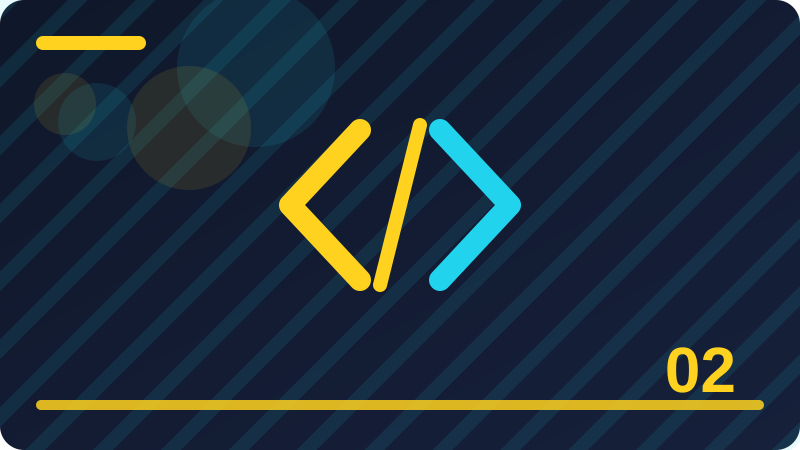

Chapter 2: Variables, Constants and Types

Section 1: What a Variable Is
Learning what a variable is well matters more than memorising a single example. The goal of this section is a clear mental picture: what the idea means, how Go expresses it, and where it fits in a small program.
Go expresses what a variable is with a small amount of syntax, and that smallness is deliberate. When a language needs only a few forms for an idea, you can spend your attention on the problem instead of on punctuation.
The example is deliberately short. Short examples are easier to change, and changing one thing at a time is the fastest way to learn: change a value, run the program, and watch exactly what changes in the output.
Another common mistake is copying a longer example before the short one works. Build the small version first, confirm it runs, and only then add the next piece, so you always know which change introduced a problem.
When you finish this section, explain what a variable is aloud in one or two sentences, as if to a friend who has never seen Go. If you cannot explain it simply, re-read the section and the example once more before moving on.
To see why what a variable is matters, imagine a small program that needs to do one clear job for a user. Without a clear grasp of what a variable is, that program becomes harder to write, harder to read, and harder to fix when it behaves unexpectedly. With it, the same program can be written in a few plain lines, each of which you can explain. That difference is the difference between guessing at code and writing code with intent, and it grows with every program you build.
Another way to think about what a variable is is to ask three questions: what does it represent, what can it do, and what can go wrong with it. Answering those questions for the example below will give you a working model, even if some details are still new. You do not need to know every corner of what a variable is yet; you need a reliable starting model that later sections can refine, and that is exactly what this section aims to give you.
In practice, what a variable is shows up in programs of every size, from a first hello-world style example to tools people use every day. The forms change a little as programs grow, but the core idea stays recognisable, which is why learning it carefully now pays off repeatedly. Watch for it in later chapters, and notice how the same idea combines with new ones to solve larger problems.
When you practise what a variable is, aim for understanding you can demonstrate, not just recognition. Run the example, break it in a small way, fix it again, and then write a version of your own with different values. That cycle of running, breaking, fixing and rebuilding is short, repeatable, and far more effective than reading the same page several times without touching the keyboard.
package main
import "fmt"
func main() {
const setting = 11
fmt.Println(setting)
}Check: What would change in the example if you changed one value, and why would that change happen?
Section 2: Declaring a Variable with var
Start this section by thinking about declaring a variable with var as a tool, not as a rule to recite. Tools are judged by what they let you build, and this section shows the job this tool does inside a Go program.
The way Go handles declaring a variable with var rewards reading code slowly. Each line has one job, and if you can say that job in plain words, you probably understand the line well enough to change it safely.
Try predicting the output before you run the example. If your prediction is wrong, that is useful information, not a failure, because the gap between prediction and output points directly at the idea you still need to clarify.
Beginners also sometimes assume a program that runs is a program that is correct. Running proves the code compiles and executes; checking the output against what you expected proves it does the job you intended.
Keep a note of any question declaring a variable with var leaves you with. Good questions are part of learning, and many of them will be answered naturally by the next few sections, which build directly on this one.
To see why declaring a variable with var matters, imagine a small program that needs to do one clear job for a user. Without a clear grasp of declaring a variable with var, that program becomes harder to write, harder to read, and harder to fix when it behaves unexpectedly. With it, the same program can be written in a few plain lines, each of which you can explain. That difference is the difference between guessing at code and writing code with intent, and it grows with every program you build.
Another way to think about declaring a variable with var is to ask three questions: what does it represent, what can it do, and what can go wrong with it. Answering those questions for the example below will give you a working model, even if some details are still new. You do not need to know every corner of declaring a variable with var yet; you need a reliable starting model that later sections can refine, and that is exactly what this section aims to give you.
In practice, declaring a variable with var shows up in programs of every size, from a first hello-world style example to tools people use every day. The forms change a little as programs grow, but the core idea stays recognisable, which is why learning it carefully now pays off repeatedly. Watch for it in later chapters, and notice how the same idea combines with new ones to solve larger problems.
When you practise declaring a variable with var, aim for understanding you can demonstrate, not just recognition. Run the example, break it in a small way, fix it again, and then write a version of your own with different values. That cycle of running, breaking, fixing and rebuilding is short, repeatable, and far more effective than reading the same page several times without touching the keyboard.
package main
import "fmt"
func main() {
value := 3
fmt.Println(value)
}Check: What mistake is most likely when using declaring a variable with var, and how would you spot it from the output or error message?
Section 3: Short Declaration with :=
This section introduces short declaration with :=. It is a useful place to slow down, because the idea here appears again and again in later chapters, and a learner who understands it now will find the next steps much easier.
In Go, short declaration with := follows the same honest design as the rest of the language: the code says what it means, the compiler checks what it can, and surprises are kept small. That honesty is one reason beginners can trust what they read.
Look at the code example below and read it line by line before you run it. Notice which part names something, which part does something, and which part shows a result, because that three-part reading habit works for almost every Go example.
A common mistake with short declaration with := is rushing past an error message. Go error messages are usually specific, and they often name the line and the problem, so reading the first error carefully saves more time than guessing at a fix.
To practise short declaration with :=, write the example from memory, then change one value and one name. That small act of rebuilding forces you to recall the structure instead of recognising it, and recall is what lasts.
To see why short declaration with := matters, imagine a small program that needs to do one clear job for a user. Without a clear grasp of short declaration with :=, that program becomes harder to write, harder to read, and harder to fix when it behaves unexpectedly. With it, the same program can be written in a few plain lines, each of which you can explain. That difference is the difference between guessing at code and writing code with intent, and it grows with every program you build.
Another way to think about short declaration with := is to ask three questions: what does it represent, what can it do, and what can go wrong with it. Answering those questions for the example below will give you a working model, even if some details are still new. You do not need to know every corner of short declaration with := yet; you need a reliable starting model that later sections can refine, and that is exactly what this section aims to give you.
In practice, short declaration with := shows up in programs of every size, from a first hello-world style example to tools people use every day. The forms change a little as programs grow, but the core idea stays recognisable, which is why learning it carefully now pays off repeatedly. Watch for it in later chapters, and notice how the same idea combines with new ones to solve larger problems.
When you practise short declaration with :=, aim for understanding you can demonstrate, not just recognition. Run the example, break it in a small way, fix it again, and then write a version of your own with different values. That cycle of running, breaking, fixing and rebuilding is short, repeatable, and far more effective than reading the same page several times without touching the keyboard.
package main
import "fmt"
func main() {
const setting = 13
fmt.Println(setting)
}Check: Explain short declaration with := to a beginner in two sentences without using code.
Section 4: Choosing a Good Variable Name
Learning choosing a good variable name well matters more than memorising a single example. The goal of this section is a clear mental picture: what the idea means, how Go expresses it, and where it fits in a small program.
Go expresses choosing a good variable name with a small amount of syntax, and that smallness is deliberate. When a language needs only a few forms for an idea, you can spend your attention on the problem instead of on punctuation.
The example is deliberately short. Short examples are easier to change, and changing one thing at a time is the fastest way to learn: change a value, run the program, and watch exactly what changes in the output.
Another common mistake is copying a longer example before the short one works. Build the small version first, confirm it runs, and only then add the next piece, so you always know which change introduced a problem.
When you finish this section, explain choosing a good variable name aloud in one or two sentences, as if to a friend who has never seen Go. If you cannot explain it simply, re-read the section and the example once more before moving on.
To see why choosing a good variable name matters, imagine a small program that needs to do one clear job for a user. Without a clear grasp of choosing a good variable name, that program becomes harder to write, harder to read, and harder to fix when it behaves unexpectedly. With it, the same program can be written in a few plain lines, each of which you can explain. That difference is the difference between guessing at code and writing code with intent, and it grows with every program you build.
Another way to think about choosing a good variable name is to ask three questions: what does it represent, what can it do, and what can go wrong with it. Answering those questions for the example below will give you a working model, even if some details are still new. You do not need to know every corner of choosing a good variable name yet; you need a reliable starting model that later sections can refine, and that is exactly what this section aims to give you.
In practice, choosing a good variable name shows up in programs of every size, from a first hello-world style example to tools people use every day. The forms change a little as programs grow, but the core idea stays recognisable, which is why learning it carefully now pays off repeatedly. Watch for it in later chapters, and notice how the same idea combines with new ones to solve larger problems.
When you practise choosing a good variable name, aim for understanding you can demonstrate, not just recognition. Run the example, break it in a small way, fix it again, and then write a version of your own with different values. That cycle of running, breaking, fixing and rebuilding is short, repeatable, and far more effective than reading the same page several times without touching the keyboard.
package main
import "fmt"
func main() {
value := 5
fmt.Println(value)
}Check: Give a small everyday example, outside programming, that works like choosing a good variable name.
Section 5: Naming Rules in Go
Start this section by thinking about naming rules in go as a tool, not as a rule to recite. Tools are judged by what they let you build, and this section shows the job this tool does inside a Go program.
The way Go handles naming rules in go rewards reading code slowly. Each line has one job, and if you can say that job in plain words, you probably understand the line well enough to change it safely.
Try predicting the output before you run the example. If your prediction is wrong, that is useful information, not a failure, because the gap between prediction and output points directly at the idea you still need to clarify.
Beginners also sometimes assume a program that runs is a program that is correct. Running proves the code compiles and executes; checking the output against what you expected proves it does the job you intended.
Keep a note of any question naming rules in go leaves you with. Good questions are part of learning, and many of them will be answered naturally by the next few sections, which build directly on this one.
To see why naming rules in go matters, imagine a small program that needs to do one clear job for a user. Without a clear grasp of naming rules in go, that program becomes harder to write, harder to read, and harder to fix when it behaves unexpectedly. With it, the same program can be written in a few plain lines, each of which you can explain. That difference is the difference between guessing at code and writing code with intent, and it grows with every program you build.
Another way to think about naming rules in go is to ask three questions: what does it represent, what can it do, and what can go wrong with it. Answering those questions for the example below will give you a working model, even if some details are still new. You do not need to know every corner of naming rules in go yet; you need a reliable starting model that later sections can refine, and that is exactly what this section aims to give you.
In practice, naming rules in go shows up in programs of every size, from a first hello-world style example to tools people use every day. The forms change a little as programs grow, but the core idea stays recognisable, which is why learning it carefully now pays off repeatedly. Watch for it in later chapters, and notice how the same idea combines with new ones to solve larger problems.
When you practise naming rules in go, aim for understanding you can demonstrate, not just recognition. Run the example, break it in a small way, fix it again, and then write a version of your own with different values. That cycle of running, breaking, fixing and rebuilding is short, repeatable, and far more effective than reading the same page several times without touching the keyboard.
package main
import "fmt"
func main() {
const setting = 15
fmt.Println(setting)
}Check: In your own words, what does naming rules in go mean, and where would you use it in a small Go program?
Section 6: Variables and Memory in Plain Words
This section introduces variables and memory in plain words. It is a useful place to slow down, because the idea here appears again and again in later chapters, and a learner who understands it now will find the next steps much easier.
In Go, variables and memory in plain words follows the same honest design as the rest of the language: the code says what it means, the compiler checks what it can, and surprises are kept small. That honesty is one reason beginners can trust what they read.
Look at the code example below and read it line by line before you run it. Notice which part names something, which part does something, and which part shows a result, because that three-part reading habit works for almost every Go example.
A common mistake with variables and memory in plain words is rushing past an error message. Go error messages are usually specific, and they often name the line and the problem, so reading the first error carefully saves more time than guessing at a fix.
To practise variables and memory in plain words, write the example from memory, then change one value and one name. That small act of rebuilding forces you to recall the structure instead of recognising it, and recall is what lasts.
To see why variables and memory in plain words matters, imagine a small program that needs to do one clear job for a user. Without a clear grasp of variables and memory in plain words, that program becomes harder to write, harder to read, and harder to fix when it behaves unexpectedly. With it, the same program can be written in a few plain lines, each of which you can explain. That difference is the difference between guessing at code and writing code with intent, and it grows with every program you build.
Another way to think about variables and memory in plain words is to ask three questions: what does it represent, what can it do, and what can go wrong with it. Answering those questions for the example below will give you a working model, even if some details are still new. You do not need to know every corner of variables and memory in plain words yet; you need a reliable starting model that later sections can refine, and that is exactly what this section aims to give you.
In practice, variables and memory in plain words shows up in programs of every size, from a first hello-world style example to tools people use every day. The forms change a little as programs grow, but the core idea stays recognisable, which is why learning it carefully now pays off repeatedly. Watch for it in later chapters, and notice how the same idea combines with new ones to solve larger problems.
When you practise variables and memory in plain words, aim for understanding you can demonstrate, not just recognition. Run the example, break it in a small way, fix it again, and then write a version of your own with different values. That cycle of running, breaking, fixing and rebuilding is short, repeatable, and far more effective than reading the same page several times without touching the keyboard.
package main
import "fmt"
func main() {
value := 7
fmt.Println(value)
}Check: What would change in the example if you changed one value, and why would that change happen?
Section 7: The int Type
Learning the int type well matters more than memorising a single example. The goal of this section is a clear mental picture: what the idea means, how Go expresses it, and where it fits in a small program.
Go expresses the int type with a small amount of syntax, and that smallness is deliberate. When a language needs only a few forms for an idea, you can spend your attention on the problem instead of on punctuation.
The example is deliberately short. Short examples are easier to change, and changing one thing at a time is the fastest way to learn: change a value, run the program, and watch exactly what changes in the output.
Another common mistake is copying a longer example before the short one works. Build the small version first, confirm it runs, and only then add the next piece, so you always know which change introduced a problem.
When you finish this section, explain the int type aloud in one or two sentences, as if to a friend who has never seen Go. If you cannot explain it simply, re-read the section and the example once more before moving on.
To see why the int type matters, imagine a small program that needs to do one clear job for a user. Without a clear grasp of the int type, that program becomes harder to write, harder to read, and harder to fix when it behaves unexpectedly. With it, the same program can be written in a few plain lines, each of which you can explain. That difference is the difference between guessing at code and writing code with intent, and it grows with every program you build.
Another way to think about the int type is to ask three questions: what does it represent, what can it do, and what can go wrong with it. Answering those questions for the example below will give you a working model, even if some details are still new. You do not need to know every corner of the int type yet; you need a reliable starting model that later sections can refine, and that is exactly what this section aims to give you.
In practice, the int type shows up in programs of every size, from a first hello-world style example to tools people use every day. The forms change a little as programs grow, but the core idea stays recognisable, which is why learning it carefully now pays off repeatedly. Watch for it in later chapters, and notice how the same idea combines with new ones to solve larger problems.
When you practise the int type, aim for understanding you can demonstrate, not just recognition. Run the example, break it in a small way, fix it again, and then write a version of your own with different values. That cycle of running, breaking, fixing and rebuilding is short, repeatable, and far more effective than reading the same page several times without touching the keyboard.
package main
import "fmt"
func main() {
const setting = 17
fmt.Println(setting)
}Check: What mistake is most likely when using the int type, and how would you spot it from the output or error message?
Section 8: The float64 Type
Start this section by thinking about the float64 type as a tool, not as a rule to recite. Tools are judged by what they let you build, and this section shows the job this tool does inside a Go program.
The way Go handles the float64 type rewards reading code slowly. Each line has one job, and if you can say that job in plain words, you probably understand the line well enough to change it safely.
Try predicting the output before you run the example. If your prediction is wrong, that is useful information, not a failure, because the gap between prediction and output points directly at the idea you still need to clarify.
Beginners also sometimes assume a program that runs is a program that is correct. Running proves the code compiles and executes; checking the output against what you expected proves it does the job you intended.
Keep a note of any question the float64 type leaves you with. Good questions are part of learning, and many of them will be answered naturally by the next few sections, which build directly on this one.
To see why the float64 type matters, imagine a small program that needs to do one clear job for a user. Without a clear grasp of the float64 type, that program becomes harder to write, harder to read, and harder to fix when it behaves unexpectedly. With it, the same program can be written in a few plain lines, each of which you can explain. That difference is the difference between guessing at code and writing code with intent, and it grows with every program you build.
Another way to think about the float64 type is to ask three questions: what does it represent, what can it do, and what can go wrong with it. Answering those questions for the example below will give you a working model, even if some details are still new. You do not need to know every corner of the float64 type yet; you need a reliable starting model that later sections can refine, and that is exactly what this section aims to give you.
In practice, the float64 type shows up in programs of every size, from a first hello-world style example to tools people use every day. The forms change a little as programs grow, but the core idea stays recognisable, which is why learning it carefully now pays off repeatedly. Watch for it in later chapters, and notice how the same idea combines with new ones to solve larger problems.
When you practise the float64 type, aim for understanding you can demonstrate, not just recognition. Run the example, break it in a small way, fix it again, and then write a version of your own with different values. That cycle of running, breaking, fixing and rebuilding is short, repeatable, and far more effective than reading the same page several times without touching the keyboard.
Consistency helps: use the same style for similar lines, so differences in your code stand out when they are intentional.
package main
import "fmt"
func main() {
value := 9
fmt.Println(value)
}Check: Explain the float64 type to a beginner in two sentences without using code.
Section 9: The string Type
This section introduces the string type. It is a useful place to slow down, because the idea here appears again and again in later chapters, and a learner who understands it now will find the next steps much easier.
In Go, the string type follows the same honest design as the rest of the language: the code says what it means, the compiler checks what it can, and surprises are kept small. That honesty is one reason beginners can trust what they read.
Look at the code example below and read it line by line before you run it. Notice which part names something, which part does something, and which part shows a result, because that three-part reading habit works for almost every Go example.
A common mistake with the string type is rushing past an error message. Go error messages are usually specific, and they often name the line and the problem, so reading the first error carefully saves more time than guessing at a fix.
To practise the string type, write the example from memory, then change one value and one name. That small act of rebuilding forces you to recall the structure instead of recognising it, and recall is what lasts.
To see why the string type matters, imagine a small program that needs to do one clear job for a user. Without a clear grasp of the string type, that program becomes harder to write, harder to read, and harder to fix when it behaves unexpectedly. With it, the same program can be written in a few plain lines, each of which you can explain. That difference is the difference between guessing at code and writing code with intent, and it grows with every program you build.
Another way to think about the string type is to ask three questions: what does it represent, what can it do, and what can go wrong with it. Answering those questions for the example below will give you a working model, even if some details are still new. You do not need to know every corner of the string type yet; you need a reliable starting model that later sections can refine, and that is exactly what this section aims to give you.
In practice, the string type shows up in programs of every size, from a first hello-world style example to tools people use every day. The forms change a little as programs grow, but the core idea stays recognisable, which is why learning it carefully now pays off repeatedly. Watch for it in later chapters, and notice how the same idea combines with new ones to solve larger problems.
When you practise the string type, aim for understanding you can demonstrate, not just recognition. Run the example, break it in a small way, fix it again, and then write a version of your own with different values. That cycle of running, breaking, fixing and rebuilding is short, repeatable, and far more effective than reading the same page several times without touching the keyboard.
package main
import "fmt"
func main() {
const setting = 19
fmt.Println(setting)
}Check: Give a small everyday example, outside programming, that works like the string type.
Section 10: The bool Type
Learning the bool type well matters more than memorising a single example. The goal of this section is a clear mental picture: what the idea means, how Go expresses it, and where it fits in a small program.
Go expresses the bool type with a small amount of syntax, and that smallness is deliberate. When a language needs only a few forms for an idea, you can spend your attention on the problem instead of on punctuation.
The example is deliberately short. Short examples are easier to change, and changing one thing at a time is the fastest way to learn: change a value, run the program, and watch exactly what changes in the output.
Another common mistake is copying a longer example before the short one works. Build the small version first, confirm it runs, and only then add the next piece, so you always know which change introduced a problem.
When you finish this section, explain the bool type aloud in one or two sentences, as if to a friend who has never seen Go. If you cannot explain it simply, re-read the section and the example once more before moving on.
To see why the bool type matters, imagine a small program that needs to do one clear job for a user. Without a clear grasp of the bool type, that program becomes harder to write, harder to read, and harder to fix when it behaves unexpectedly. With it, the same program can be written in a few plain lines, each of which you can explain. That difference is the difference between guessing at code and writing code with intent, and it grows with every program you build.
Another way to think about the bool type is to ask three questions: what does it represent, what can it do, and what can go wrong with it. Answering those questions for the example below will give you a working model, even if some details are still new. You do not need to know every corner of the bool type yet; you need a reliable starting model that later sections can refine, and that is exactly what this section aims to give you.
In practice, the bool type shows up in programs of every size, from a first hello-world style example to tools people use every day. The forms change a little as programs grow, but the core idea stays recognisable, which is why learning it carefully now pays off repeatedly. Watch for it in later chapters, and notice how the same idea combines with new ones to solve larger problems.
When you practise the bool type, aim for understanding you can demonstrate, not just recognition. Run the example, break it in a small way, fix it again, and then write a version of your own with different values. That cycle of running, breaking, fixing and rebuilding is short, repeatable, and far more effective than reading the same page several times without touching the keyboard.
package main
import "fmt"
func main() {
value := 11
fmt.Println(value)
}Check: In your own words, what does the bool type mean, and where would you use it in a small Go program?
Section 11: Declaring Several Variables at Once
Start this section by thinking about declaring several variables at once as a tool, not as a rule to recite. Tools are judged by what they let you build, and this section shows the job this tool does inside a Go program.
The way Go handles declaring several variables at once rewards reading code slowly. Each line has one job, and if you can say that job in plain words, you probably understand the line well enough to change it safely.
Try predicting the output before you run the example. If your prediction is wrong, that is useful information, not a failure, because the gap between prediction and output points directly at the idea you still need to clarify.
Beginners also sometimes assume a program that runs is a program that is correct. Running proves the code compiles and executes; checking the output against what you expected proves it does the job you intended.
Keep a note of any question declaring several variables at once leaves you with. Good questions are part of learning, and many of them will be answered naturally by the next few sections, which build directly on this one.
To see why declaring several variables at once matters, imagine a small program that needs to do one clear job for a user. Without a clear grasp of declaring several variables at once, that program becomes harder to write, harder to read, and harder to fix when it behaves unexpectedly. With it, the same program can be written in a few plain lines, each of which you can explain. That difference is the difference between guessing at code and writing code with intent, and it grows with every program you build.
Another way to think about declaring several variables at once is to ask three questions: what does it represent, what can it do, and what can go wrong with it. Answering those questions for the example below will give you a working model, even if some details are still new. You do not need to know every corner of declaring several variables at once yet; you need a reliable starting model that later sections can refine, and that is exactly what this section aims to give you.
In practice, declaring several variables at once shows up in programs of every size, from a first hello-world style example to tools people use every day. The forms change a little as programs grow, but the core idea stays recognisable, which is why learning it carefully now pays off repeatedly. Watch for it in later chapters, and notice how the same idea combines with new ones to solve larger problems.
When you practise declaring several variables at once, aim for understanding you can demonstrate, not just recognition. Run the example, break it in a small way, fix it again, and then write a version of your own with different values. That cycle of running, breaking, fixing and rebuilding is short, repeatable, and far more effective than reading the same page several times without touching the keyboard.
package main
import "fmt"
func main() {
const setting = 21
fmt.Println(setting)
}Check: What would change in the example if you changed one value, and why would that change happen?
Section 12: Zero Values in Go
This section introduces zero values in go. It is a useful place to slow down, because the idea here appears again and again in later chapters, and a learner who understands it now will find the next steps much easier.
In Go, zero values in go follows the same honest design as the rest of the language: the code says what it means, the compiler checks what it can, and surprises are kept small. That honesty is one reason beginners can trust what they read.
Look at the code example below and read it line by line before you run it. Notice which part names something, which part does something, and which part shows a result, because that three-part reading habit works for almost every Go example.
A common mistake with zero values in go is rushing past an error message. Go error messages are usually specific, and they often name the line and the problem, so reading the first error carefully saves more time than guessing at a fix.
To practise zero values in go, write the example from memory, then change one value and one name. That small act of rebuilding forces you to recall the structure instead of recognising it, and recall is what lasts.
To see why zero values in go matters, imagine a small program that needs to do one clear job for a user. Without a clear grasp of zero values in go, that program becomes harder to write, harder to read, and harder to fix when it behaves unexpectedly. With it, the same program can be written in a few plain lines, each of which you can explain. That difference is the difference between guessing at code and writing code with intent, and it grows with every program you build.
Another way to think about zero values in go is to ask three questions: what does it represent, what can it do, and what can go wrong with it. Answering those questions for the example below will give you a working model, even if some details are still new. You do not need to know every corner of zero values in go yet; you need a reliable starting model that later sections can refine, and that is exactly what this section aims to give you.
In practice, zero values in go shows up in programs of every size, from a first hello-world style example to tools people use every day. The forms change a little as programs grow, but the core idea stays recognisable, which is why learning it carefully now pays off repeatedly. Watch for it in later chapters, and notice how the same idea combines with new ones to solve larger problems.
When you practise zero values in go, aim for understanding you can demonstrate, not just recognition. Run the example, break it in a small way, fix it again, and then write a version of your own with different values. That cycle of running, breaking, fixing and rebuilding is short, repeatable, and far more effective than reading the same page several times without touching the keyboard.
package main
import "fmt"
func main() {
value := 13
fmt.Println(value)
}Check: What mistake is most likely when using zero values in go, and how would you spot it from the output or error message?
Section 13: What Happens Before You Assign a Value
Learning what happens before you assign a value well matters more than memorising a single example. The goal of this section is a clear mental picture: what the idea means, how Go expresses it, and where it fits in a small program.
Go expresses what happens before you assign a value with a small amount of syntax, and that smallness is deliberate. When a language needs only a few forms for an idea, you can spend your attention on the problem instead of on punctuation.
The example is deliberately short. Short examples are easier to change, and changing one thing at a time is the fastest way to learn: change a value, run the program, and watch exactly what changes in the output.
Another common mistake is copying a longer example before the short one works. Build the small version first, confirm it runs, and only then add the next piece, so you always know which change introduced a problem.
When you finish this section, explain what happens before you assign a value aloud in one or two sentences, as if to a friend who has never seen Go. If you cannot explain it simply, re-read the section and the example once more before moving on.
To see why what happens before you assign a value matters, imagine a small program that needs to do one clear job for a user. Without a clear grasp of what happens before you assign a value, that program becomes harder to write, harder to read, and harder to fix when it behaves unexpectedly. With it, the same program can be written in a few plain lines, each of which you can explain. That difference is the difference between guessing at code and writing code with intent, and it grows with every program you build.
Another way to think about what happens before you assign a value is to ask three questions: what does it represent, what can it do, and what can go wrong with it. Answering those questions for the example below will give you a working model, even if some details are still new. You do not need to know every corner of what happens before you assign a value yet; you need a reliable starting model that later sections can refine, and that is exactly what this section aims to give you.
In practice, what happens before you assign a value shows up in programs of every size, from a first hello-world style example to tools people use every day. The forms change a little as programs grow, but the core idea stays recognisable, which is why learning it carefully now pays off repeatedly. Watch for it in later chapters, and notice how the same idea combines with new ones to solve larger problems.
When you practise what happens before you assign a value, aim for understanding you can demonstrate, not just recognition. Run the example, break it in a small way, fix it again, and then write a version of your own with different values. That cycle of running, breaking, fixing and rebuilding is short, repeatable, and far more effective than reading the same page several times without touching the keyboard.
package main
import "fmt"
func main() {
const setting = 23
fmt.Println(setting)
}Check: Explain what happens before you assign a value to a beginner in two sentences without using code.
Section 14: Assigning a New Value
Start this section by thinking about assigning a new value as a tool, not as a rule to recite. Tools are judged by what they let you build, and this section shows the job this tool does inside a Go program.
The way Go handles assigning a new value rewards reading code slowly. Each line has one job, and if you can say that job in plain words, you probably understand the line well enough to change it safely.
Try predicting the output before you run the example. If your prediction is wrong, that is useful information, not a failure, because the gap between prediction and output points directly at the idea you still need to clarify.
Beginners also sometimes assume a program that runs is a program that is correct. Running proves the code compiles and executes; checking the output against what you expected proves it does the job you intended.
Keep a note of any question assigning a new value leaves you with. Good questions are part of learning, and many of them will be answered naturally by the next few sections, which build directly on this one.
To see why assigning a new value matters, imagine a small program that needs to do one clear job for a user. Without a clear grasp of assigning a new value, that program becomes harder to write, harder to read, and harder to fix when it behaves unexpectedly. With it, the same program can be written in a few plain lines, each of which you can explain. That difference is the difference between guessing at code and writing code with intent, and it grows with every program you build.
Another way to think about assigning a new value is to ask three questions: what does it represent, what can it do, and what can go wrong with it. Answering those questions for the example below will give you a working model, even if some details are still new. You do not need to know every corner of assigning a new value yet; you need a reliable starting model that later sections can refine, and that is exactly what this section aims to give you.
In practice, assigning a new value shows up in programs of every size, from a first hello-world style example to tools people use every day. The forms change a little as programs grow, but the core idea stays recognisable, which is why learning it carefully now pays off repeatedly. Watch for it in later chapters, and notice how the same idea combines with new ones to solve larger problems.
When you practise assigning a new value, aim for understanding you can demonstrate, not just recognition. Run the example, break it in a small way, fix it again, and then write a version of your own with different values. That cycle of running, breaking, fixing and rebuilding is short, repeatable, and far more effective than reading the same page several times without touching the keyboard.
package main
import "fmt"
func main() {
value := 15
fmt.Println(value)
}Check: Give a small everyday example, outside programming, that works like assigning a new value.
Section 15: Reassigning Versus Redeclaring
This section introduces reassigning versus redeclaring. It is a useful place to slow down, because the idea here appears again and again in later chapters, and a learner who understands it now will find the next steps much easier.
In Go, reassigning versus redeclaring follows the same honest design as the rest of the language: the code says what it means, the compiler checks what it can, and surprises are kept small. That honesty is one reason beginners can trust what they read.
Look at the code example below and read it line by line before you run it. Notice which part names something, which part does something, and which part shows a result, because that three-part reading habit works for almost every Go example.
A common mistake with reassigning versus redeclaring is rushing past an error message. Go error messages are usually specific, and they often name the line and the problem, so reading the first error carefully saves more time than guessing at a fix.
To practise reassigning versus redeclaring, write the example from memory, then change one value and one name. That small act of rebuilding forces you to recall the structure instead of recognising it, and recall is what lasts.
To see why reassigning versus redeclaring matters, imagine a small program that needs to do one clear job for a user. Without a clear grasp of reassigning versus redeclaring, that program becomes harder to write, harder to read, and harder to fix when it behaves unexpectedly. With it, the same program can be written in a few plain lines, each of which you can explain. That difference is the difference between guessing at code and writing code with intent, and it grows with every program you build.
Another way to think about reassigning versus redeclaring is to ask three questions: what does it represent, what can it do, and what can go wrong with it. Answering those questions for the example below will give you a working model, even if some details are still new. You do not need to know every corner of reassigning versus redeclaring yet; you need a reliable starting model that later sections can refine, and that is exactly what this section aims to give you.
In practice, reassigning versus redeclaring shows up in programs of every size, from a first hello-world style example to tools people use every day. The forms change a little as programs grow, but the core idea stays recognisable, which is why learning it carefully now pays off repeatedly. Watch for it in later chapters, and notice how the same idea combines with new ones to solve larger problems.
When you practise reassigning versus redeclaring, aim for understanding you can demonstrate, not just recognition. Run the example, break it in a small way, fix it again, and then write a version of your own with different values. That cycle of running, breaking, fixing and rebuilding is short, repeatable, and far more effective than reading the same page several times without touching the keyboard.
package main
import "fmt"
func main() {
const setting = 25
fmt.Println(setting)
}Check: In your own words, what does reassigning versus redeclaring mean, and where would you use it in a small Go program?
Section 16: Type Inference in Plain Words
Learning type inference in plain words well matters more than memorising a single example. The goal of this section is a clear mental picture: what the idea means, how Go expresses it, and where it fits in a small program.
Go expresses type inference in plain words with a small amount of syntax, and that smallness is deliberate. When a language needs only a few forms for an idea, you can spend your attention on the problem instead of on punctuation.
The example is deliberately short. Short examples are easier to change, and changing one thing at a time is the fastest way to learn: change a value, run the program, and watch exactly what changes in the output.
Another common mistake is copying a longer example before the short one works. Build the small version first, confirm it runs, and only then add the next piece, so you always know which change introduced a problem.
When you finish this section, explain type inference in plain words aloud in one or two sentences, as if to a friend who has never seen Go. If you cannot explain it simply, re-read the section and the example once more before moving on.
To see why type inference in plain words matters, imagine a small program that needs to do one clear job for a user. Without a clear grasp of type inference in plain words, that program becomes harder to write, harder to read, and harder to fix when it behaves unexpectedly. With it, the same program can be written in a few plain lines, each of which you can explain. That difference is the difference between guessing at code and writing code with intent, and it grows with every program you build.
Another way to think about type inference in plain words is to ask three questions: what does it represent, what can it do, and what can go wrong with it. Answering those questions for the example below will give you a working model, even if some details are still new. You do not need to know every corner of type inference in plain words yet; you need a reliable starting model that later sections can refine, and that is exactly what this section aims to give you.
In practice, type inference in plain words shows up in programs of every size, from a first hello-world style example to tools people use every day. The forms change a little as programs grow, but the core idea stays recognisable, which is why learning it carefully now pays off repeatedly. Watch for it in later chapters, and notice how the same idea combines with new ones to solve larger problems.
When you practise type inference in plain words, aim for understanding you can demonstrate, not just recognition. Run the example, break it in a small way, fix it again, and then write a version of your own with different values. That cycle of running, breaking, fixing and rebuilding is short, repeatable, and far more effective than reading the same page several times without touching the keyboard.
package main
import "fmt"
func main() {
value := 17
fmt.Println(value)
}Check: What would change in the example if you changed one value, and why would that change happen?
Section 17: When Type Inference Helps
Start this section by thinking about when type inference helps as a tool, not as a rule to recite. Tools are judged by what they let you build, and this section shows the job this tool does inside a Go program.
The way Go handles when type inference helps rewards reading code slowly. Each line has one job, and if you can say that job in plain words, you probably understand the line well enough to change it safely.
Try predicting the output before you run the example. If your prediction is wrong, that is useful information, not a failure, because the gap between prediction and output points directly at the idea you still need to clarify.
Beginners also sometimes assume a program that runs is a program that is correct. Running proves the code compiles and executes; checking the output against what you expected proves it does the job you intended.
Keep a note of any question when type inference helps leaves you with. Good questions are part of learning, and many of them will be answered naturally by the next few sections, which build directly on this one.
To see why when type inference helps matters, imagine a small program that needs to do one clear job for a user. Without a clear grasp of when type inference helps, that program becomes harder to write, harder to read, and harder to fix when it behaves unexpectedly. With it, the same program can be written in a few plain lines, each of which you can explain. That difference is the difference between guessing at code and writing code with intent, and it grows with every program you build.
Another way to think about when type inference helps is to ask three questions: what does it represent, what can it do, and what can go wrong with it. Answering those questions for the example below will give you a working model, even if some details are still new. You do not need to know every corner of when type inference helps yet; you need a reliable starting model that later sections can refine, and that is exactly what this section aims to give you.
In practice, when type inference helps shows up in programs of every size, from a first hello-world style example to tools people use every day. The forms change a little as programs grow, but the core idea stays recognisable, which is why learning it carefully now pays off repeatedly. Watch for it in later chapters, and notice how the same idea combines with new ones to solve larger problems.
When you practise when type inference helps, aim for understanding you can demonstrate, not just recognition. Run the example, break it in a small way, fix it again, and then write a version of your own with different values. That cycle of running, breaking, fixing and rebuilding is short, repeatable, and far more effective than reading the same page several times without touching the keyboard.
package main
import "fmt"
func main() {
const setting = 27
fmt.Println(setting)
}Check: What mistake is most likely when using when type inference helps, and how would you spot it from the output or error message?
Section 18: When an Explicit Type Is Better
This section introduces when an explicit type is better. It is a useful place to slow down, because the idea here appears again and again in later chapters, and a learner who understands it now will find the next steps much easier.
In Go, when an explicit type is better follows the same honest design as the rest of the language: the code says what it means, the compiler checks what it can, and surprises are kept small. That honesty is one reason beginners can trust what they read.
Look at the code example below and read it line by line before you run it. Notice which part names something, which part does something, and which part shows a result, because that three-part reading habit works for almost every Go example.
A common mistake with when an explicit type is better is rushing past an error message. Go error messages are usually specific, and they often name the line and the problem, so reading the first error carefully saves more time than guessing at a fix.
To practise when an explicit type is better, write the example from memory, then change one value and one name. That small act of rebuilding forces you to recall the structure instead of recognising it, and recall is what lasts.
To see why when an explicit type is better matters, imagine a small program that needs to do one clear job for a user. Without a clear grasp of when an explicit type is better, that program becomes harder to write, harder to read, and harder to fix when it behaves unexpectedly. With it, the same program can be written in a few plain lines, each of which you can explain. That difference is the difference between guessing at code and writing code with intent, and it grows with every program you build.
Another way to think about when an explicit type is better is to ask three questions: what does it represent, what can it do, and what can go wrong with it. Answering those questions for the example below will give you a working model, even if some details are still new. You do not need to know every corner of when an explicit type is better yet; you need a reliable starting model that later sections can refine, and that is exactly what this section aims to give you.
In practice, when an explicit type is better shows up in programs of every size, from a first hello-world style example to tools people use every day. The forms change a little as programs grow, but the core idea stays recognisable, which is why learning it carefully now pays off repeatedly. Watch for it in later chapters, and notice how the same idea combines with new ones to solve larger problems.
When you practise when an explicit type is better, aim for understanding you can demonstrate, not just recognition. Run the example, break it in a small way, fix it again, and then write a version of your own with different values. That cycle of running, breaking, fixing and rebuilding is short, repeatable, and far more effective than reading the same page several times without touching the keyboard.
package main
import "fmt"
func main() {
value := 19
fmt.Println(value)
}Check: Explain when an explicit type is better to a beginner in two sentences without using code.
Section 19: Constants with const
Learning constants with const well matters more than memorising a single example. The goal of this section is a clear mental picture: what the idea means, how Go expresses it, and where it fits in a small program.
Go expresses constants with const with a small amount of syntax, and that smallness is deliberate. When a language needs only a few forms for an idea, you can spend your attention on the problem instead of on punctuation.
The example is deliberately short. Short examples are easier to change, and changing one thing at a time is the fastest way to learn: change a value, run the program, and watch exactly what changes in the output.
Another common mistake is copying a longer example before the short one works. Build the small version first, confirm it runs, and only then add the next piece, so you always know which change introduced a problem.
When you finish this section, explain constants with const aloud in one or two sentences, as if to a friend who has never seen Go. If you cannot explain it simply, re-read the section and the example once more before moving on.
To see why constants with const matters, imagine a small program that needs to do one clear job for a user. Without a clear grasp of constants with const, that program becomes harder to write, harder to read, and harder to fix when it behaves unexpectedly. With it, the same program can be written in a few plain lines, each of which you can explain. That difference is the difference between guessing at code and writing code with intent, and it grows with every program you build.
Another way to think about constants with const is to ask three questions: what does it represent, what can it do, and what can go wrong with it. Answering those questions for the example below will give you a working model, even if some details are still new. You do not need to know every corner of constants with const yet; you need a reliable starting model that later sections can refine, and that is exactly what this section aims to give you.
In practice, constants with const shows up in programs of every size, from a first hello-world style example to tools people use every day. The forms change a little as programs grow, but the core idea stays recognisable, which is why learning it carefully now pays off repeatedly. Watch for it in later chapters, and notice how the same idea combines with new ones to solve larger problems.
When you practise constants with const, aim for understanding you can demonstrate, not just recognition. Run the example, break it in a small way, fix it again, and then write a version of your own with different values. That cycle of running, breaking, fixing and rebuilding is short, repeatable, and far more effective than reading the same page several times without touching the keyboard.
package main
import "fmt"
func main() {
const setting = 29
fmt.Println(setting)
}Check: Give a small everyday example, outside programming, that works like constants with const.
Section 20: Why Constants Cannot Change
Start this section by thinking about why constants cannot change as a tool, not as a rule to recite. Tools are judged by what they let you build, and this section shows the job this tool does inside a Go program.
The way Go handles why constants cannot change rewards reading code slowly. Each line has one job, and if you can say that job in plain words, you probably understand the line well enough to change it safely.
Try predicting the output before you run the example. If your prediction is wrong, that is useful information, not a failure, because the gap between prediction and output points directly at the idea you still need to clarify.
Beginners also sometimes assume a program that runs is a program that is correct. Running proves the code compiles and executes; checking the output against what you expected proves it does the job you intended.
Keep a note of any question why constants cannot change leaves you with. Good questions are part of learning, and many of them will be answered naturally by the next few sections, which build directly on this one.
To see why why constants cannot change matters, imagine a small program that needs to do one clear job for a user. Without a clear grasp of why constants cannot change, that program becomes harder to write, harder to read, and harder to fix when it behaves unexpectedly. With it, the same program can be written in a few plain lines, each of which you can explain. That difference is the difference between guessing at code and writing code with intent, and it grows with every program you build.
Another way to think about why constants cannot change is to ask three questions: what does it represent, what can it do, and what can go wrong with it. Answering those questions for the example below will give you a working model, even if some details are still new. You do not need to know every corner of why constants cannot change yet; you need a reliable starting model that later sections can refine, and that is exactly what this section aims to give you.
In practice, why constants cannot change shows up in programs of every size, from a first hello-world style example to tools people use every day. The forms change a little as programs grow, but the core idea stays recognisable, which is why learning it carefully now pays off repeatedly. Watch for it in later chapters, and notice how the same idea combines with new ones to solve larger problems.
When you practise why constants cannot change, aim for understanding you can demonstrate, not just recognition. Run the example, break it in a small way, fix it again, and then write a version of your own with different values. That cycle of running, breaking, fixing and rebuilding is short, repeatable, and far more effective than reading the same page several times without touching the keyboard.
package main
import "fmt"
func main() {
value := 21
fmt.Println(value)
}Check: In your own words, what does why constants cannot change mean, and where would you use it in a small Go program?
Section 21: Typed and Untyped Constants
This section introduces typed and untyped constants. It is a useful place to slow down, because the idea here appears again and again in later chapters, and a learner who understands it now will find the next steps much easier.
In Go, typed and untyped constants follows the same honest design as the rest of the language: the code says what it means, the compiler checks what it can, and surprises are kept small. That honesty is one reason beginners can trust what they read.
Look at the code example below and read it line by line before you run it. Notice which part names something, which part does something, and which part shows a result, because that three-part reading habit works for almost every Go example.
A common mistake with typed and untyped constants is rushing past an error message. Go error messages are usually specific, and they often name the line and the problem, so reading the first error carefully saves more time than guessing at a fix.
To practise typed and untyped constants, write the example from memory, then change one value and one name. That small act of rebuilding forces you to recall the structure instead of recognising it, and recall is what lasts.
To see why typed and untyped constants matters, imagine a small program that needs to do one clear job for a user. Without a clear grasp of typed and untyped constants, that program becomes harder to write, harder to read, and harder to fix when it behaves unexpectedly. With it, the same program can be written in a few plain lines, each of which you can explain. That difference is the difference between guessing at code and writing code with intent, and it grows with every program you build.
Another way to think about typed and untyped constants is to ask three questions: what does it represent, what can it do, and what can go wrong with it. Answering those questions for the example below will give you a working model, even if some details are still new. You do not need to know every corner of typed and untyped constants yet; you need a reliable starting model that later sections can refine, and that is exactly what this section aims to give you.
In practice, typed and untyped constants shows up in programs of every size, from a first hello-world style example to tools people use every day. The forms change a little as programs grow, but the core idea stays recognisable, which is why learning it carefully now pays off repeatedly. Watch for it in later chapters, and notice how the same idea combines with new ones to solve larger problems.
When you practise typed and untyped constants, aim for understanding you can demonstrate, not just recognition. Run the example, break it in a small way, fix it again, and then write a version of your own with different values. That cycle of running, breaking, fixing and rebuilding is short, repeatable, and far more effective than reading the same page several times without touching the keyboard.
package main
import "fmt"
func main() {
const setting = 31
fmt.Println(setting)
}Check: What would change in the example if you changed one value, and why would that change happen?
Section 22: Grouping Constants Together
Learning grouping constants together well matters more than memorising a single example. The goal of this section is a clear mental picture: what the idea means, how Go expresses it, and where it fits in a small program.
Go expresses grouping constants together with a small amount of syntax, and that smallness is deliberate. When a language needs only a few forms for an idea, you can spend your attention on the problem instead of on punctuation.
The example is deliberately short. Short examples are easier to change, and changing one thing at a time is the fastest way to learn: change a value, run the program, and watch exactly what changes in the output.
Another common mistake is copying a longer example before the short one works. Build the small version first, confirm it runs, and only then add the next piece, so you always know which change introduced a problem.
When you finish this section, explain grouping constants together aloud in one or two sentences, as if to a friend who has never seen Go. If you cannot explain it simply, re-read the section and the example once more before moving on.
To see why grouping constants together matters, imagine a small program that needs to do one clear job for a user. Without a clear grasp of grouping constants together, that program becomes harder to write, harder to read, and harder to fix when it behaves unexpectedly. With it, the same program can be written in a few plain lines, each of which you can explain. That difference is the difference between guessing at code and writing code with intent, and it grows with every program you build.
Another way to think about grouping constants together is to ask three questions: what does it represent, what can it do, and what can go wrong with it. Answering those questions for the example below will give you a working model, even if some details are still new. You do not need to know every corner of grouping constants together yet; you need a reliable starting model that later sections can refine, and that is exactly what this section aims to give you.
In practice, grouping constants together shows up in programs of every size, from a first hello-world style example to tools people use every day. The forms change a little as programs grow, but the core idea stays recognisable, which is why learning it carefully now pays off repeatedly. Watch for it in later chapters, and notice how the same idea combines with new ones to solve larger problems.
When you practise grouping constants together, aim for understanding you can demonstrate, not just recognition. Run the example, break it in a small way, fix it again, and then write a version of your own with different values. That cycle of running, breaking, fixing and rebuilding is short, repeatable, and far more effective than reading the same page several times without touching the keyboard.
package main
import "fmt"
func main() {
value := 23
fmt.Println(value)
}Check: What mistake is most likely when using grouping constants together, and how would you spot it from the output or error message?
Section 23: The iota Constant Generator
Start this section by thinking about the iota constant generator as a tool, not as a rule to recite. Tools are judged by what they let you build, and this section shows the job this tool does inside a Go program.
The way Go handles the iota constant generator rewards reading code slowly. Each line has one job, and if you can say that job in plain words, you probably understand the line well enough to change it safely.
Try predicting the output before you run the example. If your prediction is wrong, that is useful information, not a failure, because the gap between prediction and output points directly at the idea you still need to clarify.
Beginners also sometimes assume a program that runs is a program that is correct. Running proves the code compiles and executes; checking the output against what you expected proves it does the job you intended.
Keep a note of any question the iota constant generator leaves you with. Good questions are part of learning, and many of them will be answered naturally by the next few sections, which build directly on this one.
To see why the iota constant generator matters, imagine a small program that needs to do one clear job for a user. Without a clear grasp of the iota constant generator, that program becomes harder to write, harder to read, and harder to fix when it behaves unexpectedly. With it, the same program can be written in a few plain lines, each of which you can explain. That difference is the difference between guessing at code and writing code with intent, and it grows with every program you build.
Another way to think about the iota constant generator is to ask three questions: what does it represent, what can it do, and what can go wrong with it. Answering those questions for the example below will give you a working model, even if some details are still new. You do not need to know every corner of the iota constant generator yet; you need a reliable starting model that later sections can refine, and that is exactly what this section aims to give you.
In practice, the iota constant generator shows up in programs of every size, from a first hello-world style example to tools people use every day. The forms change a little as programs grow, but the core idea stays recognisable, which is why learning it carefully now pays off repeatedly. Watch for it in later chapters, and notice how the same idea combines with new ones to solve larger problems.
When you practise the iota constant generator, aim for understanding you can demonstrate, not just recognition. Run the example, break it in a small way, fix it again, and then write a version of your own with different values. That cycle of running, breaking, fixing and rebuilding is short, repeatable, and far more effective than reading the same page several times without touching the keyboard.
package main
import "fmt"
func main() {
const setting = 33
fmt.Println(setting)
}Check: Explain the iota constant generator to a beginner in two sentences without using code.
Section 24: Using iota for Related Values
This section introduces using iota for related values. It is a useful place to slow down, because the idea here appears again and again in later chapters, and a learner who understands it now will find the next steps much easier.
In Go, using iota for related values follows the same honest design as the rest of the language: the code says what it means, the compiler checks what it can, and surprises are kept small. That honesty is one reason beginners can trust what they read.
Look at the code example below and read it line by line before you run it. Notice which part names something, which part does something, and which part shows a result, because that three-part reading habit works for almost every Go example.
A common mistake with using iota for related values is rushing past an error message. Go error messages are usually specific, and they often name the line and the problem, so reading the first error carefully saves more time than guessing at a fix.
To practise using iota for related values, write the example from memory, then change one value and one name. That small act of rebuilding forces you to recall the structure instead of recognising it, and recall is what lasts.
To see why using iota for related values matters, imagine a small program that needs to do one clear job for a user. Without a clear grasp of using iota for related values, that program becomes harder to write, harder to read, and harder to fix when it behaves unexpectedly. With it, the same program can be written in a few plain lines, each of which you can explain. That difference is the difference between guessing at code and writing code with intent, and it grows with every program you build.
Another way to think about using iota for related values is to ask three questions: what does it represent, what can it do, and what can go wrong with it. Answering those questions for the example below will give you a working model, even if some details are still new. You do not need to know every corner of using iota for related values yet; you need a reliable starting model that later sections can refine, and that is exactly what this section aims to give you.
In practice, using iota for related values shows up in programs of every size, from a first hello-world style example to tools people use every day. The forms change a little as programs grow, but the core idea stays recognisable, which is why learning it carefully now pays off repeatedly. Watch for it in later chapters, and notice how the same idea combines with new ones to solve larger problems.
When you practise using iota for related values, aim for understanding you can demonstrate, not just recognition. Run the example, break it in a small way, fix it again, and then write a version of your own with different values. That cycle of running, breaking, fixing and rebuilding is short, repeatable, and far more effective than reading the same page several times without touching the keyboard.
package main
import "fmt"
func main() {
value := 25
fmt.Println(value)
}Check: Give a small everyday example, outside programming, that works like using iota for related values.
Section 25: Blank Identifier with _
Learning blank identifier with _ well matters more than memorising a single example. The goal of this section is a clear mental picture: what the idea means, how Go expresses it, and where it fits in a small program.
Go expresses blank identifier with _ with a small amount of syntax, and that smallness is deliberate. When a language needs only a few forms for an idea, you can spend your attention on the problem instead of on punctuation.
The example is deliberately short. Short examples are easier to change, and changing one thing at a time is the fastest way to learn: change a value, run the program, and watch exactly what changes in the output.
Another common mistake is copying a longer example before the short one works. Build the small version first, confirm it runs, and only then add the next piece, so you always know which change introduced a problem.
When you finish this section, explain blank identifier with _ aloud in one or two sentences, as if to a friend who has never seen Go. If you cannot explain it simply, re-read the section and the example once more before moving on.
To see why blank identifier with _ matters, imagine a small program that needs to do one clear job for a user. Without a clear grasp of blank identifier with _, that program becomes harder to write, harder to read, and harder to fix when it behaves unexpectedly. With it, the same program can be written in a few plain lines, each of which you can explain. That difference is the difference between guessing at code and writing code with intent, and it grows with every program you build.
Another way to think about blank identifier with _ is to ask three questions: what does it represent, what can it do, and what can go wrong with it. Answering those questions for the example below will give you a working model, even if some details are still new. You do not need to know every corner of blank identifier with _ yet; you need a reliable starting model that later sections can refine, and that is exactly what this section aims to give you.
In practice, blank identifier with _ shows up in programs of every size, from a first hello-world style example to tools people use every day. The forms change a little as programs grow, but the core idea stays recognisable, which is why learning it carefully now pays off repeatedly. Watch for it in later chapters, and notice how the same idea combines with new ones to solve larger problems.
When you practise blank identifier with _, aim for understanding you can demonstrate, not just recognition. Run the example, break it in a small way, fix it again, and then write a version of your own with different values. That cycle of running, breaking, fixing and rebuilding is short, repeatable, and far more effective than reading the same page several times without touching the keyboard.
package main
import "fmt"
func main() {
const setting = 35
fmt.Println(setting)
}Check: In your own words, what does blank identifier with _ mean, and where would you use it in a small Go program?
Section 26: Multiple Assignment in One Line
Start this section by thinking about multiple assignment in one line as a tool, not as a rule to recite. Tools are judged by what they let you build, and this section shows the job this tool does inside a Go program.
The way Go handles multiple assignment in one line rewards reading code slowly. Each line has one job, and if you can say that job in plain words, you probably understand the line well enough to change it safely.
Try predicting the output before you run the example. If your prediction is wrong, that is useful information, not a failure, because the gap between prediction and output points directly at the idea you still need to clarify.
Beginners also sometimes assume a program that runs is a program that is correct. Running proves the code compiles and executes; checking the output against what you expected proves it does the job you intended.
Keep a note of any question multiple assignment in one line leaves you with. Good questions are part of learning, and many of them will be answered naturally by the next few sections, which build directly on this one.
To see why multiple assignment in one line matters, imagine a small program that needs to do one clear job for a user. Without a clear grasp of multiple assignment in one line, that program becomes harder to write, harder to read, and harder to fix when it behaves unexpectedly. With it, the same program can be written in a few plain lines, each of which you can explain. That difference is the difference between guessing at code and writing code with intent, and it grows with every program you build.
Another way to think about multiple assignment in one line is to ask three questions: what does it represent, what can it do, and what can go wrong with it. Answering those questions for the example below will give you a working model, even if some details are still new. You do not need to know every corner of multiple assignment in one line yet; you need a reliable starting model that later sections can refine, and that is exactly what this section aims to give you.
In practice, multiple assignment in one line shows up in programs of every size, from a first hello-world style example to tools people use every day. The forms change a little as programs grow, but the core idea stays recognisable, which is why learning it carefully now pays off repeatedly. Watch for it in later chapters, and notice how the same idea combines with new ones to solve larger problems.
When you practise multiple assignment in one line, aim for understanding you can demonstrate, not just recognition. Run the example, break it in a small way, fix it again, and then write a version of your own with different values. That cycle of running, breaking, fixing and rebuilding is short, repeatable, and far more effective than reading the same page several times without touching the keyboard.
package main
import "fmt"
func main() {
value := 27
fmt.Println(value)
}Check: What would change in the example if you changed one value, and why would that change happen?
Section 27: Swapping Two Variables
This section introduces swapping two variables. It is a useful place to slow down, because the idea here appears again and again in later chapters, and a learner who understands it now will find the next steps much easier.
In Go, swapping two variables follows the same honest design as the rest of the language: the code says what it means, the compiler checks what it can, and surprises are kept small. That honesty is one reason beginners can trust what they read.
Look at the code example below and read it line by line before you run it. Notice which part names something, which part does something, and which part shows a result, because that three-part reading habit works for almost every Go example.
A common mistake with swapping two variables is rushing past an error message. Go error messages are usually specific, and they often name the line and the problem, so reading the first error carefully saves more time than guessing at a fix.
To practise swapping two variables, write the example from memory, then change one value and one name. That small act of rebuilding forces you to recall the structure instead of recognising it, and recall is what lasts.
To see why swapping two variables matters, imagine a small program that needs to do one clear job for a user. Without a clear grasp of swapping two variables, that program becomes harder to write, harder to read, and harder to fix when it behaves unexpectedly. With it, the same program can be written in a few plain lines, each of which you can explain. That difference is the difference between guessing at code and writing code with intent, and it grows with every program you build.
Another way to think about swapping two variables is to ask three questions: what does it represent, what can it do, and what can go wrong with it. Answering those questions for the example below will give you a working model, even if some details are still new. You do not need to know every corner of swapping two variables yet; you need a reliable starting model that later sections can refine, and that is exactly what this section aims to give you.
In practice, swapping two variables shows up in programs of every size, from a first hello-world style example to tools people use every day. The forms change a little as programs grow, but the core idea stays recognisable, which is why learning it carefully now pays off repeatedly. Watch for it in later chapters, and notice how the same idea combines with new ones to solve larger problems.
When you practise swapping two variables, aim for understanding you can demonstrate, not just recognition. Run the example, break it in a small way, fix it again, and then write a version of your own with different values. That cycle of running, breaking, fixing and rebuilding is short, repeatable, and far more effective than reading the same page several times without touching the keyboard.
package main
import "fmt"
func main() {
const setting = 37
fmt.Println(setting)
}Check: What mistake is most likely when using swapping two variables, and how would you spot it from the output or error message?
Section 28: Scope: Where a Variable Lives
Learning scope: where a variable lives well matters more than memorising a single example. The goal of this section is a clear mental picture: what the idea means, how Go expresses it, and where it fits in a small program.
Go expresses scope: where a variable lives with a small amount of syntax, and that smallness is deliberate. When a language needs only a few forms for an idea, you can spend your attention on the problem instead of on punctuation.
The example is deliberately short. Short examples are easier to change, and changing one thing at a time is the fastest way to learn: change a value, run the program, and watch exactly what changes in the output.
Another common mistake is copying a longer example before the short one works. Build the small version first, confirm it runs, and only then add the next piece, so you always know which change introduced a problem.
When you finish this section, explain scope: where a variable lives aloud in one or two sentences, as if to a friend who has never seen Go. If you cannot explain it simply, re-read the section and the example once more before moving on.
To see why scope: where a variable lives matters, imagine a small program that needs to do one clear job for a user. Without a clear grasp of scope: where a variable lives, that program becomes harder to write, harder to read, and harder to fix when it behaves unexpectedly. With it, the same program can be written in a few plain lines, each of which you can explain. That difference is the difference between guessing at code and writing code with intent, and it grows with every program you build.
Another way to think about scope: where a variable lives is to ask three questions: what does it represent, what can it do, and what can go wrong with it. Answering those questions for the example below will give you a working model, even if some details are still new. You do not need to know every corner of scope: where a variable lives yet; you need a reliable starting model that later sections can refine, and that is exactly what this section aims to give you.
In practice, scope: where a variable lives shows up in programs of every size, from a first hello-world style example to tools people use every day. The forms change a little as programs grow, but the core idea stays recognisable, which is why learning it carefully now pays off repeatedly. Watch for it in later chapters, and notice how the same idea combines with new ones to solve larger problems.
When you practise scope: where a variable lives, aim for understanding you can demonstrate, not just recognition. Run the example, break it in a small way, fix it again, and then write a version of your own with different values. That cycle of running, breaking, fixing and rebuilding is short, repeatable, and far more effective than reading the same page several times without touching the keyboard.
package main
import "fmt"
func main() {
value := 29
fmt.Println(value)
}Check: Explain scope: where a variable lives to a beginner in two sentences without using code.
Section 29: Block Scope in Plain Words
Start this section by thinking about block scope in plain words as a tool, not as a rule to recite. Tools are judged by what they let you build, and this section shows the job this tool does inside a Go program.
The way Go handles block scope in plain words rewards reading code slowly. Each line has one job, and if you can say that job in plain words, you probably understand the line well enough to change it safely.
Try predicting the output before you run the example. If your prediction is wrong, that is useful information, not a failure, because the gap between prediction and output points directly at the idea you still need to clarify.
Beginners also sometimes assume a program that runs is a program that is correct. Running proves the code compiles and executes; checking the output against what you expected proves it does the job you intended.
Keep a note of any question block scope in plain words leaves you with. Good questions are part of learning, and many of them will be answered naturally by the next few sections, which build directly on this one.
To see why block scope in plain words matters, imagine a small program that needs to do one clear job for a user. Without a clear grasp of block scope in plain words, that program becomes harder to write, harder to read, and harder to fix when it behaves unexpectedly. With it, the same program can be written in a few plain lines, each of which you can explain. That difference is the difference between guessing at code and writing code with intent, and it grows with every program you build.
Another way to think about block scope in plain words is to ask three questions: what does it represent, what can it do, and what can go wrong with it. Answering those questions for the example below will give you a working model, even if some details are still new. You do not need to know every corner of block scope in plain words yet; you need a reliable starting model that later sections can refine, and that is exactly what this section aims to give you.
In practice, block scope in plain words shows up in programs of every size, from a first hello-world style example to tools people use every day. The forms change a little as programs grow, but the core idea stays recognisable, which is why learning it carefully now pays off repeatedly. Watch for it in later chapters, and notice how the same idea combines with new ones to solve larger problems.
When you practise block scope in plain words, aim for understanding you can demonstrate, not just recognition. Run the example, break it in a small way, fix it again, and then write a version of your own with different values. That cycle of running, breaking, fixing and rebuilding is short, repeatable, and far more effective than reading the same page several times without touching the keyboard.
package main
import "fmt"
func main() {
const setting = 39
fmt.Println(setting)
}Check: Give a small everyday example, outside programming, that works like block scope in plain words.
Section 30: Package-Level Variables
This section introduces package-level variables. It is a useful place to slow down, because the idea here appears again and again in later chapters, and a learner who understands it now will find the next steps much easier.
In Go, package-level variables follows the same honest design as the rest of the language: the code says what it means, the compiler checks what it can, and surprises are kept small. That honesty is one reason beginners can trust what they read.
Look at the code example below and read it line by line before you run it. Notice which part names something, which part does something, and which part shows a result, because that three-part reading habit works for almost every Go example.
A common mistake with package-level variables is rushing past an error message. Go error messages are usually specific, and they often name the line and the problem, so reading the first error carefully saves more time than guessing at a fix.
To practise package-level variables, write the example from memory, then change one value and one name. That small act of rebuilding forces you to recall the structure instead of recognising it, and recall is what lasts.
To see why package-level variables matters, imagine a small program that needs to do one clear job for a user. Without a clear grasp of package-level variables, that program becomes harder to write, harder to read, and harder to fix when it behaves unexpectedly. With it, the same program can be written in a few plain lines, each of which you can explain. That difference is the difference between guessing at code and writing code with intent, and it grows with every program you build.
Another way to think about package-level variables is to ask three questions: what does it represent, what can it do, and what can go wrong with it. Answering those questions for the example below will give you a working model, even if some details are still new. You do not need to know every corner of package-level variables yet; you need a reliable starting model that later sections can refine, and that is exactly what this section aims to give you.
In practice, package-level variables shows up in programs of every size, from a first hello-world style example to tools people use every day. The forms change a little as programs grow, but the core idea stays recognisable, which is why learning it carefully now pays off repeatedly. Watch for it in later chapters, and notice how the same idea combines with new ones to solve larger problems.
When you practise package-level variables, aim for understanding you can demonstrate, not just recognition. Run the example, break it in a small way, fix it again, and then write a version of your own with different values. That cycle of running, breaking, fixing and rebuilding is short, repeatable, and far more effective than reading the same page several times without touching the keyboard.
package main
import "fmt"
func main() {
value := 31
fmt.Println(value)
}Check: In your own words, what does package-level variables mean, and where would you use it in a small Go program?
Section 31: Shadowing a Variable by Accident
Learning shadowing a variable by accident well matters more than memorising a single example. The goal of this section is a clear mental picture: what the idea means, how Go expresses it, and where it fits in a small program.
Go expresses shadowing a variable by accident with a small amount of syntax, and that smallness is deliberate. When a language needs only a few forms for an idea, you can spend your attention on the problem instead of on punctuation.
The example is deliberately short. Short examples are easier to change, and changing one thing at a time is the fastest way to learn: change a value, run the program, and watch exactly what changes in the output.
Another common mistake is copying a longer example before the short one works. Build the small version first, confirm it runs, and only then add the next piece, so you always know which change introduced a problem.
When you finish this section, explain shadowing a variable by accident aloud in one or two sentences, as if to a friend who has never seen Go. If you cannot explain it simply, re-read the section and the example once more before moving on.
To see why shadowing a variable by accident matters, imagine a small program that needs to do one clear job for a user. Without a clear grasp of shadowing a variable by accident, that program becomes harder to write, harder to read, and harder to fix when it behaves unexpectedly. With it, the same program can be written in a few plain lines, each of which you can explain. That difference is the difference between guessing at code and writing code with intent, and it grows with every program you build.
Another way to think about shadowing a variable by accident is to ask three questions: what does it represent, what can it do, and what can go wrong with it. Answering those questions for the example below will give you a working model, even if some details are still new. You do not need to know every corner of shadowing a variable by accident yet; you need a reliable starting model that later sections can refine, and that is exactly what this section aims to give you.
In practice, shadowing a variable by accident shows up in programs of every size, from a first hello-world style example to tools people use every day. The forms change a little as programs grow, but the core idea stays recognisable, which is why learning it carefully now pays off repeatedly. Watch for it in later chapters, and notice how the same idea combines with new ones to solve larger problems.
When you practise shadowing a variable by accident, aim for understanding you can demonstrate, not just recognition. Run the example, break it in a small way, fix it again, and then write a version of your own with different values. That cycle of running, breaking, fixing and rebuilding is short, repeatable, and far more effective than reading the same page several times without touching the keyboard.
package main
import "fmt"
func main() {
const setting = 41
fmt.Println(setting)
}Check: What would change in the example if you changed one value, and why would that change happen?
Section 32: Unused Variables and Compiler Errors
Start this section by thinking about unused variables and compiler errors as a tool, not as a rule to recite. Tools are judged by what they let you build, and this section shows the job this tool does inside a Go program.
The way Go handles unused variables and compiler errors rewards reading code slowly. Each line has one job, and if you can say that job in plain words, you probably understand the line well enough to change it safely.
Try predicting the output before you run the example. If your prediction is wrong, that is useful information, not a failure, because the gap between prediction and output points directly at the idea you still need to clarify.
Beginners also sometimes assume a program that runs is a program that is correct. Running proves the code compiles and executes; checking the output against what you expected proves it does the job you intended.
Keep a note of any question unused variables and compiler errors leaves you with. Good questions are part of learning, and many of them will be answered naturally by the next few sections, which build directly on this one.
To see why unused variables and compiler errors matters, imagine a small program that needs to do one clear job for a user. Without a clear grasp of unused variables and compiler errors, that program becomes harder to write, harder to read, and harder to fix when it behaves unexpectedly. With it, the same program can be written in a few plain lines, each of which you can explain. That difference is the difference between guessing at code and writing code with intent, and it grows with every program you build.
Another way to think about unused variables and compiler errors is to ask three questions: what does it represent, what can it do, and what can go wrong with it. Answering those questions for the example below will give you a working model, even if some details are still new. You do not need to know every corner of unused variables and compiler errors yet; you need a reliable starting model that later sections can refine, and that is exactly what this section aims to give you.
In practice, unused variables and compiler errors shows up in programs of every size, from a first hello-world style example to tools people use every day. The forms change a little as programs grow, but the core idea stays recognisable, which is why learning it carefully now pays off repeatedly. Watch for it in later chapters, and notice how the same idea combines with new ones to solve larger problems.
When you practise unused variables and compiler errors, aim for understanding you can demonstrate, not just recognition. Run the example, break it in a small way, fix it again, and then write a version of your own with different values. That cycle of running, breaking, fixing and rebuilding is short, repeatable, and far more effective than reading the same page several times without touching the keyboard.
package main
import "fmt"
func main() {
value := 33
fmt.Println(value)
}Check: What mistake is most likely when using unused variables and compiler errors, and how would you spot it from the output or error message?
Section 33: Converting Between Types
This section introduces converting between types. It is a useful place to slow down, because the idea here appears again and again in later chapters, and a learner who understands it now will find the next steps much easier.
In Go, converting between types follows the same honest design as the rest of the language: the code says what it means, the compiler checks what it can, and surprises are kept small. That honesty is one reason beginners can trust what they read.
Look at the code example below and read it line by line before you run it. Notice which part names something, which part does something, and which part shows a result, because that three-part reading habit works for almost every Go example.
A common mistake with converting between types is rushing past an error message. Go error messages are usually specific, and they often name the line and the problem, so reading the first error carefully saves more time than guessing at a fix.
To practise converting between types, write the example from memory, then change one value and one name. That small act of rebuilding forces you to recall the structure instead of recognising it, and recall is what lasts.
To see why converting between types matters, imagine a small program that needs to do one clear job for a user. Without a clear grasp of converting between types, that program becomes harder to write, harder to read, and harder to fix when it behaves unexpectedly. With it, the same program can be written in a few plain lines, each of which you can explain. That difference is the difference between guessing at code and writing code with intent, and it grows with every program you build.
Another way to think about converting between types is to ask three questions: what does it represent, what can it do, and what can go wrong with it. Answering those questions for the example below will give you a working model, even if some details are still new. You do not need to know every corner of converting between types yet; you need a reliable starting model that later sections can refine, and that is exactly what this section aims to give you.
In practice, converting between types shows up in programs of every size, from a first hello-world style example to tools people use every day. The forms change a little as programs grow, but the core idea stays recognisable, which is why learning it carefully now pays off repeatedly. Watch for it in later chapters, and notice how the same idea combines with new ones to solve larger problems.
When you practise converting between types, aim for understanding you can demonstrate, not just recognition. Run the example, break it in a small way, fix it again, and then write a version of your own with different values. That cycle of running, breaking, fixing and rebuilding is short, repeatable, and far more effective than reading the same page several times without touching the keyboard.
package main
import "fmt"
func main() {
const setting = 43
fmt.Println(setting)
}Check: Explain converting between types to a beginner in two sentences without using code.
Section 34: Converting int to float64
Learning converting int to float64 well matters more than memorising a single example. The goal of this section is a clear mental picture: what the idea means, how Go expresses it, and where it fits in a small program.
Go expresses converting int to float64 with a small amount of syntax, and that smallness is deliberate. When a language needs only a few forms for an idea, you can spend your attention on the problem instead of on punctuation.
The example is deliberately short. Short examples are easier to change, and changing one thing at a time is the fastest way to learn: change a value, run the program, and watch exactly what changes in the output.
Another common mistake is copying a longer example before the short one works. Build the small version first, confirm it runs, and only then add the next piece, so you always know which change introduced a problem.
When you finish this section, explain converting int to float64 aloud in one or two sentences, as if to a friend who has never seen Go. If you cannot explain it simply, re-read the section and the example once more before moving on.
To see why converting int to float64 matters, imagine a small program that needs to do one clear job for a user. Without a clear grasp of converting int to float64, that program becomes harder to write, harder to read, and harder to fix when it behaves unexpectedly. With it, the same program can be written in a few plain lines, each of which you can explain. That difference is the difference between guessing at code and writing code with intent, and it grows with every program you build.
Another way to think about converting int to float64 is to ask three questions: what does it represent, what can it do, and what can go wrong with it. Answering those questions for the example below will give you a working model, even if some details are still new. You do not need to know every corner of converting int to float64 yet; you need a reliable starting model that later sections can refine, and that is exactly what this section aims to give you.
In practice, converting int to float64 shows up in programs of every size, from a first hello-world style example to tools people use every day. The forms change a little as programs grow, but the core idea stays recognisable, which is why learning it carefully now pays off repeatedly. Watch for it in later chapters, and notice how the same idea combines with new ones to solve larger problems.
When you practise converting int to float64, aim for understanding you can demonstrate, not just recognition. Run the example, break it in a small way, fix it again, and then write a version of your own with different values. That cycle of running, breaking, fixing and rebuilding is short, repeatable, and far more effective than reading the same page several times without touching the keyboard.
package main
import "fmt"
func main() {
value := 35
fmt.Println(value)
}Check: Give a small everyday example, outside programming, that works like converting int to float64.
Section 35: Converting float64 to int
Start this section by thinking about converting float64 to int as a tool, not as a rule to recite. Tools are judged by what they let you build, and this section shows the job this tool does inside a Go program.
The way Go handles converting float64 to int rewards reading code slowly. Each line has one job, and if you can say that job in plain words, you probably understand the line well enough to change it safely.
Try predicting the output before you run the example. If your prediction is wrong, that is useful information, not a failure, because the gap between prediction and output points directly at the idea you still need to clarify.
Beginners also sometimes assume a program that runs is a program that is correct. Running proves the code compiles and executes; checking the output against what you expected proves it does the job you intended.
Keep a note of any question converting float64 to int leaves you with. Good questions are part of learning, and many of them will be answered naturally by the next few sections, which build directly on this one.
To see why converting float64 to int matters, imagine a small program that needs to do one clear job for a user. Without a clear grasp of converting float64 to int, that program becomes harder to write, harder to read, and harder to fix when it behaves unexpectedly. With it, the same program can be written in a few plain lines, each of which you can explain. That difference is the difference between guessing at code and writing code with intent, and it grows with every program you build.
Another way to think about converting float64 to int is to ask three questions: what does it represent, what can it do, and what can go wrong with it. Answering those questions for the example below will give you a working model, even if some details are still new. You do not need to know every corner of converting float64 to int yet; you need a reliable starting model that later sections can refine, and that is exactly what this section aims to give you.
In practice, converting float64 to int shows up in programs of every size, from a first hello-world style example to tools people use every day. The forms change a little as programs grow, but the core idea stays recognisable, which is why learning it carefully now pays off repeatedly. Watch for it in later chapters, and notice how the same idea combines with new ones to solve larger problems.
When you practise converting float64 to int, aim for understanding you can demonstrate, not just recognition. Run the example, break it in a small way, fix it again, and then write a version of your own with different values. That cycle of running, breaking, fixing and rebuilding is short, repeatable, and far more effective than reading the same page several times without touching the keyboard.
package main
import "fmt"
func main() {
const setting = 45
fmt.Println(setting)
}Check: In your own words, what does converting float64 to int mean, and where would you use it in a small Go program?
Section 36: Converting Numbers to Strings
This section introduces converting numbers to strings. It is a useful place to slow down, because the idea here appears again and again in later chapters, and a learner who understands it now will find the next steps much easier.
In Go, converting numbers to strings follows the same honest design as the rest of the language: the code says what it means, the compiler checks what it can, and surprises are kept small. That honesty is one reason beginners can trust what they read.
Look at the code example below and read it line by line before you run it. Notice which part names something, which part does something, and which part shows a result, because that three-part reading habit works for almost every Go example.
A common mistake with converting numbers to strings is rushing past an error message. Go error messages are usually specific, and they often name the line and the problem, so reading the first error carefully saves more time than guessing at a fix.
To practise converting numbers to strings, write the example from memory, then change one value and one name. That small act of rebuilding forces you to recall the structure instead of recognising it, and recall is what lasts.
To see why converting numbers to strings matters, imagine a small program that needs to do one clear job for a user. Without a clear grasp of converting numbers to strings, that program becomes harder to write, harder to read, and harder to fix when it behaves unexpectedly. With it, the same program can be written in a few plain lines, each of which you can explain. That difference is the difference between guessing at code and writing code with intent, and it grows with every program you build.
Another way to think about converting numbers to strings is to ask three questions: what does it represent, what can it do, and what can go wrong with it. Answering those questions for the example below will give you a working model, even if some details are still new. You do not need to know every corner of converting numbers to strings yet; you need a reliable starting model that later sections can refine, and that is exactly what this section aims to give you.
In practice, converting numbers to strings shows up in programs of every size, from a first hello-world style example to tools people use every day. The forms change a little as programs grow, but the core idea stays recognisable, which is why learning it carefully now pays off repeatedly. Watch for it in later chapters, and notice how the same idea combines with new ones to solve larger problems.
When you practise converting numbers to strings, aim for understanding you can demonstrate, not just recognition. Run the example, break it in a small way, fix it again, and then write a version of your own with different values. That cycle of running, breaking, fixing and rebuilding is short, repeatable, and far more effective than reading the same page several times without touching the keyboard.
package main
import "fmt"
func main() {
value := 37
fmt.Println(value)
}Check: What would change in the example if you changed one value, and why would that change happen?
Section 37: The strconv Package in Plain Words
Learning the strconv package in plain words well matters more than memorising a single example. The goal of this section is a clear mental picture: what the idea means, how Go expresses it, and where it fits in a small program.
Go expresses the strconv package in plain words with a small amount of syntax, and that smallness is deliberate. When a language needs only a few forms for an idea, you can spend your attention on the problem instead of on punctuation.
The example is deliberately short. Short examples are easier to change, and changing one thing at a time is the fastest way to learn: change a value, run the program, and watch exactly what changes in the output.
Another common mistake is copying a longer example before the short one works. Build the small version first, confirm it runs, and only then add the next piece, so you always know which change introduced a problem.
When you finish this section, explain the strconv package in plain words aloud in one or two sentences, as if to a friend who has never seen Go. If you cannot explain it simply, re-read the section and the example once more before moving on.
To see why the strconv package in plain words matters, imagine a small program that needs to do one clear job for a user. Without a clear grasp of the strconv package in plain words, that program becomes harder to write, harder to read, and harder to fix when it behaves unexpectedly. With it, the same program can be written in a few plain lines, each of which you can explain. That difference is the difference between guessing at code and writing code with intent, and it grows with every program you build.
Another way to think about the strconv package in plain words is to ask three questions: what does it represent, what can it do, and what can go wrong with it. Answering those questions for the example below will give you a working model, even if some details are still new. You do not need to know every corner of the strconv package in plain words yet; you need a reliable starting model that later sections can refine, and that is exactly what this section aims to give you.
In practice, the strconv package in plain words shows up in programs of every size, from a first hello-world style example to tools people use every day. The forms change a little as programs grow, but the core idea stays recognisable, which is why learning it carefully now pays off repeatedly. Watch for it in later chapters, and notice how the same idea combines with new ones to solve larger problems.
When you practise the strconv package in plain words, aim for understanding you can demonstrate, not just recognition. Run the example, break it in a small way, fix it again, and then write a version of your own with different values. That cycle of running, breaking, fixing and rebuilding is short, repeatable, and far more effective than reading the same page several times without touching the keyboard.
package main
import "fmt"
func main() {
const setting = 47
fmt.Println(setting)
}Check: What mistake is most likely when using the strconv package in plain words, and how would you spot it from the output or error message?
Section 38: Type Aliases Versus Defined Types
Start this section by thinking about type aliases versus defined types as a tool, not as a rule to recite. Tools are judged by what they let you build, and this section shows the job this tool does inside a Go program.
The way Go handles type aliases versus defined types rewards reading code slowly. Each line has one job, and if you can say that job in plain words, you probably understand the line well enough to change it safely.
Try predicting the output before you run the example. If your prediction is wrong, that is useful information, not a failure, because the gap between prediction and output points directly at the idea you still need to clarify.
Beginners also sometimes assume a program that runs is a program that is correct. Running proves the code compiles and executes; checking the output against what you expected proves it does the job you intended.
Keep a note of any question type aliases versus defined types leaves you with. Good questions are part of learning, and many of them will be answered naturally by the next few sections, which build directly on this one.
To see why type aliases versus defined types matters, imagine a small program that needs to do one clear job for a user. Without a clear grasp of type aliases versus defined types, that program becomes harder to write, harder to read, and harder to fix when it behaves unexpectedly. With it, the same program can be written in a few plain lines, each of which you can explain. That difference is the difference between guessing at code and writing code with intent, and it grows with every program you build.
Another way to think about type aliases versus defined types is to ask three questions: what does it represent, what can it do, and what can go wrong with it. Answering those questions for the example below will give you a working model, even if some details are still new. You do not need to know every corner of type aliases versus defined types yet; you need a reliable starting model that later sections can refine, and that is exactly what this section aims to give you.
In practice, type aliases versus defined types shows up in programs of every size, from a first hello-world style example to tools people use every day. The forms change a little as programs grow, but the core idea stays recognisable, which is why learning it carefully now pays off repeatedly. Watch for it in later chapters, and notice how the same idea combines with new ones to solve larger problems.
When you practise type aliases versus defined types, aim for understanding you can demonstrate, not just recognition. Run the example, break it in a small way, fix it again, and then write a version of your own with different values. That cycle of running, breaking, fixing and rebuilding is short, repeatable, and far more effective than reading the same page several times without touching the keyboard.
package main
import "fmt"
func main() {
value := 39
fmt.Println(value)
}Check: Explain type aliases versus defined types to a beginner in two sentences without using code.
Section 39: Custom Types with type
This section introduces custom types with type. It is a useful place to slow down, because the idea here appears again and again in later chapters, and a learner who understands it now will find the next steps much easier.
In Go, custom types with type follows the same honest design as the rest of the language: the code says what it means, the compiler checks what it can, and surprises are kept small. That honesty is one reason beginners can trust what they read.
Look at the code example below and read it line by line before you run it. Notice which part names something, which part does something, and which part shows a result, because that three-part reading habit works for almost every Go example.
A common mistake with custom types with type is rushing past an error message. Go error messages are usually specific, and they often name the line and the problem, so reading the first error carefully saves more time than guessing at a fix.
To practise custom types with type, write the example from memory, then change one value and one name. That small act of rebuilding forces you to recall the structure instead of recognising it, and recall is what lasts.
To see why custom types with type matters, imagine a small program that needs to do one clear job for a user. Without a clear grasp of custom types with type, that program becomes harder to write, harder to read, and harder to fix when it behaves unexpectedly. With it, the same program can be written in a few plain lines, each of which you can explain. That difference is the difference between guessing at code and writing code with intent, and it grows with every program you build.
Another way to think about custom types with type is to ask three questions: what does it represent, what can it do, and what can go wrong with it. Answering those questions for the example below will give you a working model, even if some details are still new. You do not need to know every corner of custom types with type yet; you need a reliable starting model that later sections can refine, and that is exactly what this section aims to give you.
In practice, custom types with type shows up in programs of every size, from a first hello-world style example to tools people use every day. The forms change a little as programs grow, but the core idea stays recognisable, which is why learning it carefully now pays off repeatedly. Watch for it in later chapters, and notice how the same idea combines with new ones to solve larger problems.
When you practise custom types with type, aim for understanding you can demonstrate, not just recognition. Run the example, break it in a small way, fix it again, and then write a version of your own with different values. That cycle of running, breaking, fixing and rebuilding is short, repeatable, and far more effective than reading the same page several times without touching the keyboard.
package main
import "fmt"
func main() {
const setting = 49
fmt.Println(setting)
}Check: Give a small everyday example, outside programming, that works like custom types with type.
Section 40: Why Custom Types Are Useful
Learning why custom types are useful well matters more than memorising a single example. The goal of this section is a clear mental picture: what the idea means, how Go expresses it, and where it fits in a small program.
Go expresses why custom types are useful with a small amount of syntax, and that smallness is deliberate. When a language needs only a few forms for an idea, you can spend your attention on the problem instead of on punctuation.
The example is deliberately short. Short examples are easier to change, and changing one thing at a time is the fastest way to learn: change a value, run the program, and watch exactly what changes in the output.
Another common mistake is copying a longer example before the short one works. Build the small version first, confirm it runs, and only then add the next piece, so you always know which change introduced a problem.
When you finish this section, explain why custom types are useful aloud in one or two sentences, as if to a friend who has never seen Go. If you cannot explain it simply, re-read the section and the example once more before moving on.
To see why why custom types are useful matters, imagine a small program that needs to do one clear job for a user. Without a clear grasp of why custom types are useful, that program becomes harder to write, harder to read, and harder to fix when it behaves unexpectedly. With it, the same program can be written in a few plain lines, each of which you can explain. That difference is the difference between guessing at code and writing code with intent, and it grows with every program you build.
Another way to think about why custom types are useful is to ask three questions: what does it represent, what can it do, and what can go wrong with it. Answering those questions for the example below will give you a working model, even if some details are still new. You do not need to know every corner of why custom types are useful yet; you need a reliable starting model that later sections can refine, and that is exactly what this section aims to give you.
In practice, why custom types are useful shows up in programs of every size, from a first hello-world style example to tools people use every day. The forms change a little as programs grow, but the core idea stays recognisable, which is why learning it carefully now pays off repeatedly. Watch for it in later chapters, and notice how the same idea combines with new ones to solve larger problems.
When you practise why custom types are useful, aim for understanding you can demonstrate, not just recognition. Run the example, break it in a small way, fix it again, and then write a version of your own with different values. That cycle of running, breaking, fixing and rebuilding is short, repeatable, and far more effective than reading the same page several times without touching the keyboard.
package main
import "fmt"
func main() {
value := 41
fmt.Println(value)
}Check: In your own words, what does why custom types are useful mean, and where would you use it in a small Go program?
Section 41: Reading a Type Error Slowly
Start this section by thinking about reading a type error slowly as a tool, not as a rule to recite. Tools are judged by what they let you build, and this section shows the job this tool does inside a Go program.
The way Go handles reading a type error slowly rewards reading code slowly. Each line has one job, and if you can say that job in plain words, you probably understand the line well enough to change it safely.
Try predicting the output before you run the example. If your prediction is wrong, that is useful information, not a failure, because the gap between prediction and output points directly at the idea you still need to clarify.
Beginners also sometimes assume a program that runs is a program that is correct. Running proves the code compiles and executes; checking the output against what you expected proves it does the job you intended.
Keep a note of any question reading a type error slowly leaves you with. Good questions are part of learning, and many of them will be answered naturally by the next few sections, which build directly on this one.
To see why reading a type error slowly matters, imagine a small program that needs to do one clear job for a user. Without a clear grasp of reading a type error slowly, that program becomes harder to write, harder to read, and harder to fix when it behaves unexpectedly. With it, the same program can be written in a few plain lines, each of which you can explain. That difference is the difference between guessing at code and writing code with intent, and it grows with every program you build.
Another way to think about reading a type error slowly is to ask three questions: what does it represent, what can it do, and what can go wrong with it. Answering those questions for the example below will give you a working model, even if some details are still new. You do not need to know every corner of reading a type error slowly yet; you need a reliable starting model that later sections can refine, and that is exactly what this section aims to give you.
In practice, reading a type error slowly shows up in programs of every size, from a first hello-world style example to tools people use every day. The forms change a little as programs grow, but the core idea stays recognisable, which is why learning it carefully now pays off repeatedly. Watch for it in later chapters, and notice how the same idea combines with new ones to solve larger problems.
When you practise reading a type error slowly, aim for understanding you can demonstrate, not just recognition. Run the example, break it in a small way, fix it again, and then write a version of your own with different values. That cycle of running, breaking, fixing and rebuilding is short, repeatable, and far more effective than reading the same page several times without touching the keyboard.
package main
import "fmt"
func main() {
const setting = 51
fmt.Println(setting)
}Check: What would change in the example if you changed one value, and why would that change happen?
Section 42: Fixing a Type Mismatch
This section introduces fixing a type mismatch. It is a useful place to slow down, because the idea here appears again and again in later chapters, and a learner who understands it now will find the next steps much easier.
In Go, fixing a type mismatch follows the same honest design as the rest of the language: the code says what it means, the compiler checks what it can, and surprises are kept small. That honesty is one reason beginners can trust what they read.
Look at the code example below and read it line by line before you run it. Notice which part names something, which part does something, and which part shows a result, because that three-part reading habit works for almost every Go example.
A common mistake with fixing a type mismatch is rushing past an error message. Go error messages are usually specific, and they often name the line and the problem, so reading the first error carefully saves more time than guessing at a fix.
To practise fixing a type mismatch, write the example from memory, then change one value and one name. That small act of rebuilding forces you to recall the structure instead of recognising it, and recall is what lasts.
To see why fixing a type mismatch matters, imagine a small program that needs to do one clear job for a user. Without a clear grasp of fixing a type mismatch, that program becomes harder to write, harder to read, and harder to fix when it behaves unexpectedly. With it, the same program can be written in a few plain lines, each of which you can explain. That difference is the difference between guessing at code and writing code with intent, and it grows with every program you build.
Another way to think about fixing a type mismatch is to ask three questions: what does it represent, what can it do, and what can go wrong with it. Answering those questions for the example below will give you a working model, even if some details are still new. You do not need to know every corner of fixing a type mismatch yet; you need a reliable starting model that later sections can refine, and that is exactly what this section aims to give you.
In practice, fixing a type mismatch shows up in programs of every size, from a first hello-world style example to tools people use every day. The forms change a little as programs grow, but the core idea stays recognisable, which is why learning it carefully now pays off repeatedly. Watch for it in later chapters, and notice how the same idea combines with new ones to solve larger problems.
When you practise fixing a type mismatch, aim for understanding you can demonstrate, not just recognition. Run the example, break it in a small way, fix it again, and then write a version of your own with different values. That cycle of running, breaking, fixing and rebuilding is short, repeatable, and far more effective than reading the same page several times without touching the keyboard.
package main
import "fmt"
func main() {
value := 43
fmt.Println(value)
}Check: What mistake is most likely when using fixing a type mismatch, and how would you spot it from the output or error message?
Section 43: Variables in Small Programs
Learning variables in small programs well matters more than memorising a single example. The goal of this section is a clear mental picture: what the idea means, how Go expresses it, and where it fits in a small program.
Go expresses variables in small programs with a small amount of syntax, and that smallness is deliberate. When a language needs only a few forms for an idea, you can spend your attention on the problem instead of on punctuation.
The example is deliberately short. Short examples are easier to change, and changing one thing at a time is the fastest way to learn: change a value, run the program, and watch exactly what changes in the output.
Another common mistake is copying a longer example before the short one works. Build the small version first, confirm it runs, and only then add the next piece, so you always know which change introduced a problem.
When you finish this section, explain variables in small programs aloud in one or two sentences, as if to a friend who has never seen Go. If you cannot explain it simply, re-read the section and the example once more before moving on.
To see why variables in small programs matters, imagine a small program that needs to do one clear job for a user. Without a clear grasp of variables in small programs, that program becomes harder to write, harder to read, and harder to fix when it behaves unexpectedly. With it, the same program can be written in a few plain lines, each of which you can explain. That difference is the difference between guessing at code and writing code with intent, and it grows with every program you build.
Another way to think about variables in small programs is to ask three questions: what does it represent, what can it do, and what can go wrong with it. Answering those questions for the example below will give you a working model, even if some details are still new. You do not need to know every corner of variables in small programs yet; you need a reliable starting model that later sections can refine, and that is exactly what this section aims to give you.
In practice, variables in small programs shows up in programs of every size, from a first hello-world style example to tools people use every day. The forms change a little as programs grow, but the core idea stays recognisable, which is why learning it carefully now pays off repeatedly. Watch for it in later chapters, and notice how the same idea combines with new ones to solve larger problems.
When you practise variables in small programs, aim for understanding you can demonstrate, not just recognition. Run the example, break it in a small way, fix it again, and then write a version of your own with different values. That cycle of running, breaking, fixing and rebuilding is short, repeatable, and far more effective than reading the same page several times without touching the keyboard.
package main
import "fmt"
func main() {
const setting = 53
fmt.Println(setting)
}Check: Explain variables in small programs to a beginner in two sentences without using code.
Section 44: Constants for Fixed Settings
Start this section by thinking about constants for fixed settings as a tool, not as a rule to recite. Tools are judged by what they let you build, and this section shows the job this tool does inside a Go program.
The way Go handles constants for fixed settings rewards reading code slowly. Each line has one job, and if you can say that job in plain words, you probably understand the line well enough to change it safely.
Try predicting the output before you run the example. If your prediction is wrong, that is useful information, not a failure, because the gap between prediction and output points directly at the idea you still need to clarify.
Beginners also sometimes assume a program that runs is a program that is correct. Running proves the code compiles and executes; checking the output against what you expected proves it does the job you intended.
Keep a note of any question constants for fixed settings leaves you with. Good questions are part of learning, and many of them will be answered naturally by the next few sections, which build directly on this one.
To see why constants for fixed settings matters, imagine a small program that needs to do one clear job for a user. Without a clear grasp of constants for fixed settings, that program becomes harder to write, harder to read, and harder to fix when it behaves unexpectedly. With it, the same program can be written in a few plain lines, each of which you can explain. That difference is the difference between guessing at code and writing code with intent, and it grows with every program you build.
Another way to think about constants for fixed settings is to ask three questions: what does it represent, what can it do, and what can go wrong with it. Answering those questions for the example below will give you a working model, even if some details are still new. You do not need to know every corner of constants for fixed settings yet; you need a reliable starting model that later sections can refine, and that is exactly what this section aims to give you.
In practice, constants for fixed settings shows up in programs of every size, from a first hello-world style example to tools people use every day. The forms change a little as programs grow, but the core idea stays recognisable, which is why learning it carefully now pays off repeatedly. Watch for it in later chapters, and notice how the same idea combines with new ones to solve larger problems.
When you practise constants for fixed settings, aim for understanding you can demonstrate, not just recognition. Run the example, break it in a small way, fix it again, and then write a version of your own with different values. That cycle of running, breaking, fixing and rebuilding is short, repeatable, and far more effective than reading the same page several times without touching the keyboard.
package main
import "fmt"
func main() {
value := 45
fmt.Println(value)
}Check: Give a small everyday example, outside programming, that works like constants for fixed settings.
Section 45: Naming Constants Clearly
This section introduces naming constants clearly. It is a useful place to slow down, because the idea here appears again and again in later chapters, and a learner who understands it now will find the next steps much easier.
In Go, naming constants clearly follows the same honest design as the rest of the language: the code says what it means, the compiler checks what it can, and surprises are kept small. That honesty is one reason beginners can trust what they read.
Look at the code example below and read it line by line before you run it. Notice which part names something, which part does something, and which part shows a result, because that three-part reading habit works for almost every Go example.
A common mistake with naming constants clearly is rushing past an error message. Go error messages are usually specific, and they often name the line and the problem, so reading the first error carefully saves more time than guessing at a fix.
To practise naming constants clearly, write the example from memory, then change one value and one name. That small act of rebuilding forces you to recall the structure instead of recognising it, and recall is what lasts.
To see why naming constants clearly matters, imagine a small program that needs to do one clear job for a user. Without a clear grasp of naming constants clearly, that program becomes harder to write, harder to read, and harder to fix when it behaves unexpectedly. With it, the same program can be written in a few plain lines, each of which you can explain. That difference is the difference between guessing at code and writing code with intent, and it grows with every program you build.
Another way to think about naming constants clearly is to ask three questions: what does it represent, what can it do, and what can go wrong with it. Answering those questions for the example below will give you a working model, even if some details are still new. You do not need to know every corner of naming constants clearly yet; you need a reliable starting model that later sections can refine, and that is exactly what this section aims to give you.
In practice, naming constants clearly shows up in programs of every size, from a first hello-world style example to tools people use every day. The forms change a little as programs grow, but the core idea stays recognisable, which is why learning it carefully now pays off repeatedly. Watch for it in later chapters, and notice how the same idea combines with new ones to solve larger problems.
When you practise naming constants clearly, aim for understanding you can demonstrate, not just recognition. Run the example, break it in a small way, fix it again, and then write a version of your own with different values. That cycle of running, breaking, fixing and rebuilding is short, repeatable, and far more effective than reading the same page several times without touching the keyboard.
package main
import "fmt"
func main() {
const setting = 55
fmt.Println(setting)
}Check: In your own words, what does naming constants clearly mean, and where would you use it in a small Go program?
Section 46: Grouping Related Settings
Learning grouping related settings well matters more than memorising a single example. The goal of this section is a clear mental picture: what the idea means, how Go expresses it, and where it fits in a small program.
Go expresses grouping related settings with a small amount of syntax, and that smallness is deliberate. When a language needs only a few forms for an idea, you can spend your attention on the problem instead of on punctuation.
The example is deliberately short. Short examples are easier to change, and changing one thing at a time is the fastest way to learn: change a value, run the program, and watch exactly what changes in the output.
Another common mistake is copying a longer example before the short one works. Build the small version first, confirm it runs, and only then add the next piece, so you always know which change introduced a problem.
When you finish this section, explain grouping related settings aloud in one or two sentences, as if to a friend who has never seen Go. If you cannot explain it simply, re-read the section and the example once more before moving on.
To see why grouping related settings matters, imagine a small program that needs to do one clear job for a user. Without a clear grasp of grouping related settings, that program becomes harder to write, harder to read, and harder to fix when it behaves unexpectedly. With it, the same program can be written in a few plain lines, each of which you can explain. That difference is the difference between guessing at code and writing code with intent, and it grows with every program you build.
Another way to think about grouping related settings is to ask three questions: what does it represent, what can it do, and what can go wrong with it. Answering those questions for the example below will give you a working model, even if some details are still new. You do not need to know every corner of grouping related settings yet; you need a reliable starting model that later sections can refine, and that is exactly what this section aims to give you.
In practice, grouping related settings shows up in programs of every size, from a first hello-world style example to tools people use every day. The forms change a little as programs grow, but the core idea stays recognisable, which is why learning it carefully now pays off repeatedly. Watch for it in later chapters, and notice how the same idea combines with new ones to solve larger problems.
When you practise grouping related settings, aim for understanding you can demonstrate, not just recognition. Run the example, break it in a small way, fix it again, and then write a version of your own with different values. That cycle of running, breaking, fixing and rebuilding is short, repeatable, and far more effective than reading the same page several times without touching the keyboard.
package main
import "fmt"
func main() {
value := 47
fmt.Println(value)
}Check: What would change in the example if you changed one value, and why would that change happen?
Section 47: A Variable Checklist Before Running
Start this section by thinking about a variable checklist before running as a tool, not as a rule to recite. Tools are judged by what they let you build, and this section shows the job this tool does inside a Go program.
The way Go handles a variable checklist before running rewards reading code slowly. Each line has one job, and if you can say that job in plain words, you probably understand the line well enough to change it safely.
Try predicting the output before you run the example. If your prediction is wrong, that is useful information, not a failure, because the gap between prediction and output points directly at the idea you still need to clarify.
Beginners also sometimes assume a program that runs is a program that is correct. Running proves the code compiles and executes; checking the output against what you expected proves it does the job you intended.
Keep a note of any question a variable checklist before running leaves you with. Good questions are part of learning, and many of them will be answered naturally by the next few sections, which build directly on this one.
To see why a variable checklist before running matters, imagine a small program that needs to do one clear job for a user. Without a clear grasp of a variable checklist before running, that program becomes harder to write, harder to read, and harder to fix when it behaves unexpectedly. With it, the same program can be written in a few plain lines, each of which you can explain. That difference is the difference between guessing at code and writing code with intent, and it grows with every program you build.
Another way to think about a variable checklist before running is to ask three questions: what does it represent, what can it do, and what can go wrong with it. Answering those questions for the example below will give you a working model, even if some details are still new. You do not need to know every corner of a variable checklist before running yet; you need a reliable starting model that later sections can refine, and that is exactly what this section aims to give you.
In practice, a variable checklist before running shows up in programs of every size, from a first hello-world style example to tools people use every day. The forms change a little as programs grow, but the core idea stays recognisable, which is why learning it carefully now pays off repeatedly. Watch for it in later chapters, and notice how the same idea combines with new ones to solve larger problems.
When you practise a variable checklist before running, aim for understanding you can demonstrate, not just recognition. Run the example, break it in a small way, fix it again, and then write a version of your own with different values. That cycle of running, breaking, fixing and rebuilding is short, repeatable, and far more effective than reading the same page several times without touching the keyboard.
package main
import "fmt"
func main() {
const setting = 57
fmt.Println(setting)
}Check: What mistake is most likely when using a variable checklist before running, and how would you spot it from the output or error message?
Section 48: Reviewing Variables and Constants
This section introduces reviewing variables and constants. It is a useful place to slow down, because the idea here appears again and again in later chapters, and a learner who understands it now will find the next steps much easier.
In Go, reviewing variables and constants follows the same honest design as the rest of the language: the code says what it means, the compiler checks what it can, and surprises are kept small. That honesty is one reason beginners can trust what they read.
Look at the code example below and read it line by line before you run it. Notice which part names something, which part does something, and which part shows a result, because that three-part reading habit works for almost every Go example.
A common mistake with reviewing variables and constants is rushing past an error message. Go error messages are usually specific, and they often name the line and the problem, so reading the first error carefully saves more time than guessing at a fix.
To practise reviewing variables and constants, write the example from memory, then change one value and one name. That small act of rebuilding forces you to recall the structure instead of recognising it, and recall is what lasts.
To see why reviewing variables and constants matters, imagine a small program that needs to do one clear job for a user. Without a clear grasp of reviewing variables and constants, that program becomes harder to write, harder to read, and harder to fix when it behaves unexpectedly. With it, the same program can be written in a few plain lines, each of which you can explain. That difference is the difference between guessing at code and writing code with intent, and it grows with every program you build.
Another way to think about reviewing variables and constants is to ask three questions: what does it represent, what can it do, and what can go wrong with it. Answering those questions for the example below will give you a working model, even if some details are still new. You do not need to know every corner of reviewing variables and constants yet; you need a reliable starting model that later sections can refine, and that is exactly what this section aims to give you.
In practice, reviewing variables and constants shows up in programs of every size, from a first hello-world style example to tools people use every day. The forms change a little as programs grow, but the core idea stays recognisable, which is why learning it carefully now pays off repeatedly. Watch for it in later chapters, and notice how the same idea combines with new ones to solve larger problems.
When you practise reviewing variables and constants, aim for understanding you can demonstrate, not just recognition. Run the example, break it in a small way, fix it again, and then write a version of your own with different values. That cycle of running, breaking, fixing and rebuilding is short, repeatable, and far more effective than reading the same page several times without touching the keyboard.
package main
import "fmt"
func main() {
value := 49
fmt.Println(value)
}Check: Explain reviewing variables and constants to a beginner in two sentences without using code.
Section 49: Practising Declarations from Memory
Learning practising declarations from memory well matters more than memorising a single example. The goal of this section is a clear mental picture: what the idea means, how Go expresses it, and where it fits in a small program.
Go expresses practising declarations from memory with a small amount of syntax, and that smallness is deliberate. When a language needs only a few forms for an idea, you can spend your attention on the problem instead of on punctuation.
The example is deliberately short. Short examples are easier to change, and changing one thing at a time is the fastest way to learn: change a value, run the program, and watch exactly what changes in the output.
Another common mistake is copying a longer example before the short one works. Build the small version first, confirm it runs, and only then add the next piece, so you always know which change introduced a problem.
When you finish this section, explain practising declarations from memory aloud in one or two sentences, as if to a friend who has never seen Go. If you cannot explain it simply, re-read the section and the example once more before moving on.
To see why practising declarations from memory matters, imagine a small program that needs to do one clear job for a user. Without a clear grasp of practising declarations from memory, that program becomes harder to write, harder to read, and harder to fix when it behaves unexpectedly. With it, the same program can be written in a few plain lines, each of which you can explain. That difference is the difference between guessing at code and writing code with intent, and it grows with every program you build.
Another way to think about practising declarations from memory is to ask three questions: what does it represent, what can it do, and what can go wrong with it. Answering those questions for the example below will give you a working model, even if some details are still new. You do not need to know every corner of practising declarations from memory yet; you need a reliable starting model that later sections can refine, and that is exactly what this section aims to give you.
In practice, practising declarations from memory shows up in programs of every size, from a first hello-world style example to tools people use every day. The forms change a little as programs grow, but the core idea stays recognisable, which is why learning it carefully now pays off repeatedly. Watch for it in later chapters, and notice how the same idea combines with new ones to solve larger problems.
When you practise practising declarations from memory, aim for understanding you can demonstrate, not just recognition. Run the example, break it in a small way, fix it again, and then write a version of your own with different values. That cycle of running, breaking, fixing and rebuilding is short, repeatable, and far more effective than reading the same page several times without touching the keyboard.
package main
import "fmt"
func main() {
const setting = 59
fmt.Println(setting)
}Check: Give a small everyday example, outside programming, that works like practising declarations from memory.
Section 50: Getting Ready for Numbers
Start this section by thinking about getting ready for numbers as a tool, not as a rule to recite. Tools are judged by what they let you build, and this section shows the job this tool does inside a Go program.
The way Go handles getting ready for numbers rewards reading code slowly. Each line has one job, and if you can say that job in plain words, you probably understand the line well enough to change it safely.
Try predicting the output before you run the example. If your prediction is wrong, that is useful information, not a failure, because the gap between prediction and output points directly at the idea you still need to clarify.
Beginners also sometimes assume a program that runs is a program that is correct. Running proves the code compiles and executes; checking the output against what you expected proves it does the job you intended.
Keep a note of any question getting ready for numbers leaves you with. Good questions are part of learning, and many of them will be answered naturally by the next few sections, which build directly on this one.
To see why getting ready for numbers matters, imagine a small program that needs to do one clear job for a user. Without a clear grasp of getting ready for numbers, that program becomes harder to write, harder to read, and harder to fix when it behaves unexpectedly. With it, the same program can be written in a few plain lines, each of which you can explain. That difference is the difference between guessing at code and writing code with intent, and it grows with every program you build.
Another way to think about getting ready for numbers is to ask three questions: what does it represent, what can it do, and what can go wrong with it. Answering those questions for the example below will give you a working model, even if some details are still new. You do not need to know every corner of getting ready for numbers yet; you need a reliable starting model that later sections can refine, and that is exactly what this section aims to give you.
In practice, getting ready for numbers shows up in programs of every size, from a first hello-world style example to tools people use every day. The forms change a little as programs grow, but the core idea stays recognisable, which is why learning it carefully now pays off repeatedly. Watch for it in later chapters, and notice how the same idea combines with new ones to solve larger problems.
When you practise getting ready for numbers, aim for understanding you can demonstrate, not just recognition. Run the example, break it in a small way, fix it again, and then write a version of your own with different values. That cycle of running, breaking, fixing and rebuilding is short, repeatable, and far more effective than reading the same page several times without touching the keyboard.
package main
import "fmt"
func main() {
value := 51
fmt.Println(value)
}Check: In your own words, what does getting ready for numbers mean, and where would you use it in a small Go program?
Practical Task
Write a small Go program that declares variables and constants of different types, prints each one with a label, changes one variable, and prints it again, so the output shows the before and after values clearly.
Chapter Questions
- What is the difference between a variable and a constant in Go?
- When should you use := and when should you use var, and why?
- What is a zero value, and why does Go give variables one?
- Why does Go reject an unused variable, and how do you fix that error?
- How do you choose a clear name for a variable, and why does the name matter?
Comments